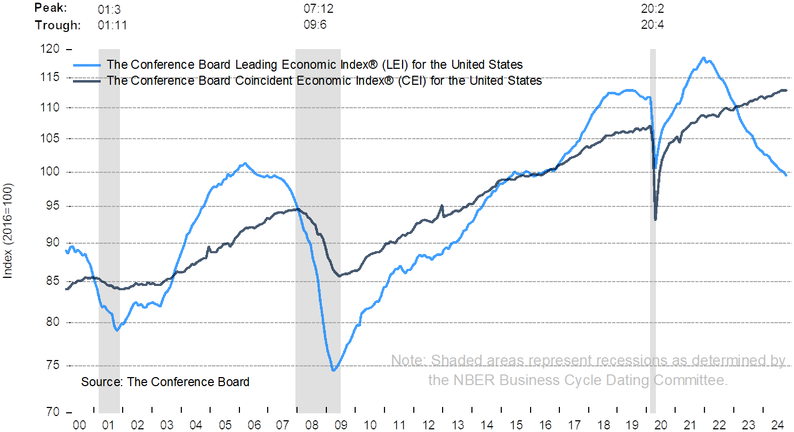

บทที่ 5 การวิเคราะห์เศรษฐกิจและอุตสาหกรรม
ในกระบวนการตัดสินใจลงทุนที่ได้กล่าวถึงในบทที่ 2 แสดงให้เห็นถึงขั้นตอนที่สำคัญในการตัดสินใจลงทุน 5 ขั้นตอนคือ 1. รู้จักตัวผู้ลงทุน 2. ประเมินระดับความเสี่ยงที่ยอมรับได้ของผู้ลงทุน 3. จัดสรรเงินลงทุนตามกลุ่มของหลักทรัพย์ โดยมีการคาดการณ์สภาวะตลาดทุน 4. คัดสรรหลักทรัพย์และสร้างกลุ่มหลักทรัพย์ 5. ติดตามและวัดผลการดำเนินงานของกลุ่มหลักทรัพย์ ขั้นตอนเหล่านี้จะดำเนินการอย่างต่อเนื่อง และปรับเปลี่ยนตามผลการประเมิน ทั้งนี้ ในขั้นตอนที่ 3. นั้น การคาดการณ์สภาวะตลาดทุน มักอ้างอิงจากการคาดการณ์สภาวะเศรษฐกิจเป็นสำคัญ และในขั้นตอนที่ 4. การคัดสรรหลักทรัพย์นั้นมีเรื่องการพยากรณ์และวิเคราะห์เศรษฐกิจและอุตสาหกรรม เป็นประเด็นสำคัญเช่นกัน
เนื้อหาในบทนี้ จะแสดงให้เห็นถึงความเชื่อมโยงระหว่างการวิเคราะห์เศรษฐกิจและอุตสาหกรรมกับการคัดสรรหลักทรัพย์และการสร้างกลุ่มหลักทรัพย์ และแนวทางในการตีความปัจจัยทางเศรษฐกิจและตัวชี้วัดเศรษฐกิจ ทั้งตัวชี้วัดระยะยาวและระยะสั้น
ปัจจัยพื้นฐานที่ใช้ประกอบการวิเคราะห์ที่ได้กล่าวถึงในบทที่ 2 ได้ถูกรวบรวมมาแสดงในรูป 5-1 ได้ถูกรวบรวมมาแสดงในรูป ซึ่งพรรณนาถึงการวิเคราะห์ปัจจัยด้านภาวะเศรษฐกิจ และปัจจัยด้านมหภาค อาทิ การดำเนินนโยบายภาครัฐ ภาวะการเมือง รวมไปถึงเศรษฐกิจโลก ปัจจัยด้านภาวะอุตสาหกรรม โครงสร้างอุตสาหกรรม สภาพการแข่งขันในอุตสาหกรรมนั้น ท้ายที่สุดจะเป็นการวิเคราะห์ปัจจัยที่เกี่ยวกับผลการดำเนินงาน รวมทั้งฐานะการเงินของบริษัทที่สนใจลงทุน ทั้งในเชิงปริมาณและคุณภาพ เพื่อเชื่อมโยงผลกระทบทั้งหมดมาเพื่อใช้คำนวณหามูลค่าที่แท้จริงของหลักทรัพย์
แนวคิดพื้นฐานในการวิเคราะห์เศรษฐกิจ
การวิเคราะห์เศรษฐกิจมีความสำคัญอย่างมากต่อการวิเคราะห์หลักทรัพย์ เนื่องจากการเปลี่ยนแปลงของภาวะเศรษฐกิจ จะส่งผลกระทบต่อราคาหลักทรัพย์ เช่น หลักทรัพย์บางกลุ่มมีระดับราคาลดลงเมื่อสภาพเศรษฐกิจชะลอตัว และจะมีระดับสูงขึ้นเมื่อเศรษฐกิจฟื้นตัวขึ้น พฤติกรรมดังกล่าวแสดงให้เห็นว่าสภาพเศรษฐกิจโดยทั่วไปจะมีผลกระทบต่อผลการดำเนินงานและความสามารถในการทำกำไรของบริษัท อย่างไรก็ตาม ในการวิเคราะห์เศรษฐกิจ ผู้วิเคราะห์จำเป็นต้องเข้าใจถึงเครื่องชี้วัดการบรรลุเป้าหมายทางเศรษฐกิจ การดำเนินนโยบายเศรษฐกิจ ตัวเลขทางเศรษฐกิจที่สำคัญ ตลอดจนวัฏจักรเศรษฐกิจ เพื่อนำไปใช้ในการคาดการณ์ทิศทางการขยายตัวของเศรษฐกิจ และกำหนดอุตสาหกรรมที่คาดว่าจะได้รับประโยชน์จากการขยายตัวของเศรษฐกิจ และท้ายที่สุดก็จะสามารถเลือกบริษัทในอุตสาหกรรมนั้นที่ควรลงทุน
เครื่องชี้วัดการบรรลุเป้าหมายทางเศรษฐกิจและการดำเนินนโยบายเศรษฐกิจ
เครื่องชี้วัดการบรรลุเป้าหมายทางเศรษฐกิจ
การบริหารเศรษฐกิจโดยทั่วไปมีเป้าหมายที่สำคัญ 4 ประการ คือ
- การสร้างความเจริญเติบโตทางเศรษฐกิจ (economic growth) หมายถึง การมีเป้าหมายให้เกิดการขยายตัวของกิจกรรมทางเศรษฐกิจ เพื่อเพิ่มปริมาณ หรือมูลค่าผลผลิตของระบบเศรษฐกิจ ซึ่งจะทำให้มาตรฐานการดำรงชีพของประชาชนโดยเฉลี่ยสูงขึ้นด้วย
- การสร้างเสถียรภาพทางเศรษฐกิจ (economic stability) หมายถึง การมีเป้าหมายเกี่ยวกับเสถียรภาพด้านการจ้างงานและราคาสินค้า กล่าวคือ ไม่ให้ระดับราคาสินค้าโดยทั่วไปสูงขึ้นอย่างต่อเนื่องเกินไป และในขณะเดียวกันต้องพยายามไม่ให้มีอัตราการว่างงานสูงเกินไปด้วย
- การจ้างงานเต็มที่ (full employment) หมายถึง การใช้กำลังแรงงานที่มีอยู่อย่างเต็มที่ตามความสามารถหรือศักยภาพของแรงงาน
- การกระจายรายได้ (income distribution) หมายถึง เป้าหมายเกี่ยวกับการลดช่องว่างระหว่างรายได้ ระหว่างกลุ่มบุคคลต่างๆ ในประเทศให้มีความแตกต่างกันน้อยลง เช่น ช่องว่างระหว่างกลุ่มผู้มีรายได้สูงมากกับกลุ่มผู้มีรายได้ต่ำมาก หรือระหว่างกลุ่มผู้มีรายได้ค่อนข้างสูง กับกลุ่มผู้มีรายได้ค่อนข้างต่ำเพื่อให้การกระจายรายได้ของสังคมมีความทั่วถึงทัดเทียมกัน
การดำเนินนโยบายเศรษฐกิจ
ในการกำกับดูแลเศรษฐกิจของประเทศนั้น โดยปกติแล้วรัฐบาลมักให้ความสำคัญกับการขยายตัวทางเศรษฐกิจ เพื่อมุ่งหวังให้ประชาชนอยู่ดีกินดี แต่หากหวังผลเพียงแต่ต้องการกระตุ้นเศรษฐกิจในระยะสั้นๆ ก็อาจทำให้เศรษฐกิจต้องประสบกับความเสี่ยงที่จะขาดเสถียรภาพในระยะยาว หรือในบางครั้งเศรษฐกิจอาจเกิดการสะดุดจากปัจจัยภายนอกที่เข้ามากระทบ
- นโยบายการคลัง (fiscal policy)
นโยบายการคลัง เป็นการดำเนินนโยบายของภาครัฐ เพื่อกระตุ้นหรือซะลอความร้อนแรงของเศรษฐกิจ โดยผ่านเครื่องมือที่รัฐบาลมี คือ การใช้จ่ายของรัฐบาล และการจัดเก็บภาษี ทั้งนี้ การตัดสินใจของรัฐบาลเกี่ยวกับการเลือกใช้นโยบายการคลัง ย่อมจะส่งผลกระทบต่อภาพเศรษฐกิจโดยรวม และราคาหลักทรัพย์ได้ ยกตัวอย่างเช่น หากรัฐต้องการกระตุ้นเศรษฐกิจ ด้วยการใช้นโยบายการคลังแบบขาดดุล (รายจ่ายมากกว่ารายได้) เพื่อเพิ่มปริมาณเงินเข้าไปในระบบ โดยผ่านการใช้จ่ายภาครัฐ ซึ่งอาจออกมาในรูปของการซื้อสินค้าและบริการ หรือเงินลงทุนในโครงการต่างๆ ของภาครัฐ (อาทิ การก่อสร้างถนน ระบบ คมนาคม) ซึ่งส่งผลโดยตรงต่อการเพิ่มการใช้จ่ายโดยรวม และ/หรือผ่านการลดภาษี รวมถึงการใช้จ่ายในลักษณะเงินโอน (อาทิ เบี้ยผู้สูงอายุ หรือนโยบายการหักลดหย่อนค่าซื้อสินค้าหรือค่าบริการ) ก็จะมีผลโดยอ้อมให้ประชาชนบริโภคเพิ่มขึ้น ทำให้มีการผลิตสินค้าและการจ้างงานมากขึ้น การที่รัฐดำเนินนโยบายการคลังแบบขยายตัวเช่นนี้ ย่อมส่งผลบวกต่อราคาหลักทรัพย์ตามไปด้วย
อย่างไรก็ดี การดำเนินนโยบายการคลังแบบขาดดุล จะก่อให้เกิดหนี้สาธารณะที่ต้องชดใช้คืนในอนาคต หากเป็นการก่อหนี้เพื่อนำไปลงทุนที่จะส่งผลต่อการเพิ่มศักยภาพการผลิตของประเทศ (อาทิ การใช้จ่ายเพื่อการพัฒนาโครงสร้างพื้นฐานของประเทศ) ซึ่งจะสนับสนุนการเติบโตทางเศรษฐกิจ ก็คงไม่ใช่เรื่องเลวร้าย แต่หากเป็นการก่อหนี้ในระดับสูง (พิจารณาจากยอดหนี้สาธารณะเทียบกับรายได้ของประเทศ) และไม่ก่อให้เกิดประโยชน์คุ้มค่า (เพื่อกระตุ้นการบริโภคในช่วงเวลาสั้นๆ) ก็อาจกระทบต่อความน่าเชื่อถือของประเทศ ซึ่งอาจทำให้ต้นทุนการกู้ยืมแพงขึ้น หรืออาจถึงขั้นไม่มีใครให้กู้เลยก็เป็นได้
ในทางกลับกัน ถ้าต้องการชะลอไม่ให้เศรษฐกิจร้อนแรงเกินไป ก็จะใช้นโยบายการคลังแบบหดตัวผ่านการจัดทำงบประมาณเกินดุล (รายรับมากกว่ารายจ่าย) ด้วยการดึงเงินออกจากระบบเศรษฐกิจ ผ่านการจำกัดการใช้จ่าย และ/หรือปรับอัตราภาษีให้เพิ่มสูงขึ้น การใช้จ่ายก็จะน้อยลง ส่งผลให้การผลิตและการจ้างงานลดลง นโยบายเช่นนี้มีแนวโน้มที่จะทำให้ราคาหลักทรัพย์ลดลงได้
จะเห็นได้ว่า การดำเนินนโยบายการคลัง โดยการใช้จ่ายเพื่อซื้อสินค้าและบริการ สามารถกระตุ้นอุปสงค์ได้โดยตรง มักจะใช้ได้อย่างมีประสิทธิผลในช่วงที่เศรษฐกิจซบเซา เพื่อกระตุ้นให้คนใช้จ่าย แต่ผลลัพธ์อาจเป็นเพียงแค่ระยะสั้นๆ เท่านั้น หากการดำเนินนโยบายการคลังไม่สามารถสร้างความมั่นใจให้ภาคเอกชนอย่างเพียงพอว่า เศรษฐกิจจะขยายตัวต่อเนื่องไปได้ ในอีกด้านหนึ่ง หากรัฐเลือกที่จะดำเนินมาตรการขาดดุลงบประมาณเป็นเวลานาน ก็อาจส่งผลให้เกิดภาวะเงินเฟ้อได้ ขณะเดียวกัน ก็มีผลให้หนี้สินของรัฐบาลเพิ่มมากขึ้น สุดท้ายก็จะดันให้อัตราดอกเบี้ยเพิ่มสูงขึ้นตามไปด้วย
- นโยบายการเงิน
นโยบายการเงิน (monetary policy) เป็นการดำเนินนโยบายของธนาคารกลาง เพื่อรักษาเสถียรภาพด้านราคา และการเจริญเติบโตทางเศรษฐกิจ โดยใช้เครื่องมือทางการเงินในการควบคุมปริมาณเงินในระบบเศรษฐกิจ ได้แก่ การกำหนดอัตราเงินสำรองตามกฎหมาย (legal reserve requirement) การเปลี่ยนแปลงอัตราดอกเบี้ยคิดลด (discount rate) ตลอดจนการซื้อ/ขายพันธบัตรในตลาด (open market operation)
ปัจจุบันธนาคารแห่งประเทศไทยดำเนินนโยบายการเงินภายใต้กรอบเป้าหมายเงินเฟ้อ (inflation targeting) เพื่อรักษาเสถียรภาพด้านราคา โดยจะมีการประกาศเป้าหมายอัตราเงินเฟ้อให้สาธารณชนทราบและใช้กลไกอัตราดอกเบี้ยนโยบายในการควบคุมอัตราเงินเฟ้อให้อยู่ในเป้าหมายที่กำหนดไว้
หากธนาคารแห่งประเทศไทยประกาศลดอัตราดอกเบี้ยนโยบาย ซึ่งปัจจุบันคืออัตราดอกเบี้ยธุรกรรมซื้อคืนพันธบัตรระยะ 1 วันลง แสดงว่าธนาคารแห่งประเทศไทยกำลังใช้นโยบายการเงินผ่อนคลายเพื่อกระตุ้นเศรษฐกิจให้ขยายตัว หากอัตราดอกเบี้ยในตลาดปรับตัวลงในทิศทางเดียวกัน ก็อาจจะกระตุ้นให้เกิดการใช้จ่ายทั้งการบริโภค และการลงทุน (ผลตอบแทนการฝากเงินลดลง และต้นทุนการกู้ยืมถูกลง) ทำให้เศรษฐกิจกลับมาคึกคัก เป็นผลดีต่อราคาหลักทรัพย์
ในทางกลับกัน หากธนาคารแห่งประเทศไทยประกาศเพิ่มอัตราดอกเบี้ยนโยบาย แสดงว่าธนาคารกำลังใช้นโยบายการเงินแบบตึงตัว เพื่อหวังชะลอความร้อนแรงของเศรษฐกิจ เมื่ออัตราดอกเบี้ยในตลาดปรับสูงขึ้น ผลตอบแทนเงินฝากอาจจูงใจให้มีการออมมากขึ้น ลดการจับจ่ายใช้สอย เพราะต้นทุนการกู้ยืม พงขึ้น ขณะที่ผู้ผลิตต้องเผชิญกับความต้องการสินค้าที่น้อยลง ก็จะผลิตน้อยลง และไม่ขยายกำลังการผลิต เศรษฐกิจก็จะลดความร้อนแรง ราคาสินค้าโดยทั่วไปจะเพิ่มขึ้นช้าลง อัตราเงินเฟ้อจะลดลง และเศรษฐกิจกลับมาเติบโตแบบค่อยเป็นค่อยไปในที่สุด
ดังนั้น การตัดสินใจของรัฐบาลเกี่ยวกับการเลือกใช้เครื่องมือต่างๆ นั้น ย่อมจะก่อให้เกิดผลกระทบต่อระดับราคา อัตราดอกเบี้ย ดุลการชำระเงิน และผลิตภัณฑ์มวลรวมภายในประเทศ ยกตัวอย่างเช่น หากรัฐใช้นโยบายการคลังแบบขยายตัว หรือการใช้นโยบายการเงินแบบผ่อนคลาย ก็จะทำให้เศรษฐกิจมีการขยายตัว มีการจ้างงานเพิ่มขึ้น ประชาชนมีรายได้สูงขึ้น ดังนั้น การที่รัฐใช้นโยบายแบบนี้น่าจะมีผลดีต่อราคาหลักทรัพย์ ในทางตรงกันข้าม หากรัฐใช้นโยบายแบบเข้มงวดก็อาจจะส่งผลให้ราคาหลักทรัพย์ลดลงก็ได้ เพราะประชาชนอาจรู้สึกว่ามีรายได้ลดลง ทำให้อุปสงค์ต่อการลงทุนในหลักทรัพย์ลดลงจึงส่งผลให้ราคาหลักทรัพย์ลดลงในที่สุด
ตัวเลขทางเศรษฐกิจที่สำคัญ
ปัจจัยแวดล้อมทางเศรษฐกิจถือเป็นปัจจัยโดยตรงที่ส่งผลกระทบทั้งทางตรงและทางอ้อมต่อจิตวิทยาของผู้ลงทุน ซึ่งจะช่วยในการพยากรณ์แนวโน้มเศรษฐกิจได้ ข้อมูลทางเศรษฐกิจที่ผู้ลงทุนควรให้ความสนใจ แสดงในตารางที่ 5-1
ตารางที่ 5-1 ดัชนี้ชี้วัดทางเศรษฐกิจ
| (หน่วย: ร้อยละ) | 2549 | 2550 | 2551 | 2552 | 2553 | 2554 | 2555 | 2556 | 2557 | 2558 |
|---|---|---|---|---|---|---|---|---|---|---|
| อัตราการเจริญเติบโตของ ผลิตภัณฑ์มวลรวมในประเทศ |
5.0 | 5.4 | 1.7 | -0.7 | 7.5 | 0.8 | 7.2 | 2.7 | 0.8 | 0.9 |
| อัตราการเจริญเติบโตของ การบริโภคภาคเอกชน |
3.1 | 0.8 | -0.5 | 3.2 | 3.9 | 4.2 | 3.6 | -0.3 | -0.6 | -14.5 |
| อัตราการเจริญเติบโตของ การลงทุนภาคเอกชน |
1.2 | 6.2 | -3.7 | -0.4 | 13.8 | -3.9 | 30.8 | -8.0 | 1.2 | -47.1 |
| อัตราการเจริญเติบโตของ การส่งออก (ดอลล่าร์ สรอ.) |
17.0 | 18.2 | 15.9 | -13.9 | 27.1 | 14.3 | 3.0 | -0.1 | -0.3 | -5.6 |
| อัตราการเจริญเติบโตของ การนำเข้า (ดอลล่าร์ สรอ.) |
7.8 | 9.1 | 26.7 | -25.1 | 37.0 | 24.9 | 8.4 | -0.1 | -7.9 | -10.6 |
| อัตราเงินเฟ้อ | 4.70 | 2.30 | 5.50 | -0.90 | 3.30 | 3.81 | 3.02 | 2.18 | 1.89 | -0.90 |
| ดุลบัญชีเดินสะพัด (ร้อยละของ GDP) |
1.1 | 6.3 | 0.8 | 8.3 | 3.8 | 2.6 | -0.4 | -1.2 | 3.7 | 8.1 |
| อัตราดอกเบี้ย MLR | 7.50 - 8.00 | 6.85 - 7.13 | 6.75 - 7.00 | 5.85 - 6.25 | 6.12 - 6.50 | 7.25 - 7.63 | 7.00 - 7.38 | 6.75 - 7.25 | 6.75 - 7.25 | 6.50 - 6.85 |
| อัตราแลกเปลี่ยน (บาท/ดอลล่าร์ สรอ.) |
37.93 | 34.56 | 33.36 | 34.34 | 31.73 | 30.49 | 31.08 | 30.73 | 32.48 | 34.25 |
ผลิตภัณฑ์มวลรวมในประเทศ
ด้วยเหตุที่เป้าหมายหลักในการดำเนินกิจกรรมทางเศรษฐกิจ ส่วนใหญ่จะมุ่งเน้นไปที่การสร้างความเจริญเติบโตทางเศรษฐกิจ ดังนั้น ตัวชี้วัดภาวะเศรษฐกิจที่สำคัญและใช้กันอย่างแพร่หลายที่สุด คือ ผลิตภัณฑ์มวลรวมในประเทศ (gross domestic product หรือ GDP) ซึ่งเป็นการวัดมูลค่าผลผลิตสินค้าและบริการขั้นสุดท้ายทั้งหมดที่ผลิตขึ้นในประเทศในช่วงระยะเวลาหนึ่ง โดยไม่คำนึงว่าเจ้าของปัจจัยการผลิต หรือ รัพยากรที่ใช้ในการผลิตสินค้าและบริการเป็นของประชาชนในประเทศ หรือเป็นของชาวต่างชาติ ขอเพียงให้อยู่ในขอบเขตพื้นที่ในประเทศเท่านั้น ทั้งนี้ หากเป็นทรัพยากรในประเทศ แต่ไปผลิตในต่างประเทศ ก็จะไม่นับรวมไว้ในผลิตภัณฑ์มวลรวมในประเทศเช่นกัน
การวัดขนาดของเศรษฐกิจ โดยใช้มูลค่าของผลิตภัณฑ์ที่ผลิตได้นี้ จะต้องมีค่าเท่ากับรายได้รวมของคนในประเทศที่เป็นค่าตอบแทนปัจจัยการผลิต ขณะเดียวกัน ก็ต้องเท่ากับค่าใช้จ่ายทั้งหมดที่เราจ่ายสำหรับการซื้อสินค้าและบริการ ตัวอย่างเช่น ประเทศไทยผลิตข้าวหอมมะลิได้ 1 ตัน มูลค่า 10,000 บาท ผู้บริโภคจ่ายเงินซื้อไปในราคา 10,000 บาท เราก็จะได้เงิน 10,000 บาท เป็นรายรับ ซึ่งสามารถนำไปจ่ายเป็นค่าตอบแทนปัจจัยการผลิตต่างๆ ที่ใช้ในการผลิตข้าว 1 ตัน เช่น ค่าวัตถุดิบ ค่าเมล็ดพันธุ์ข้าว ค่าเตรียมดิน ค่าปุ๋ย ค่าสารเคมีกำจัดโรค รวมกัน 5,000 บาท นอกจากนี้ ยังมีค่าจ้างแรงงานเพาะปลูก ดูแลและเก็บเกี่ยวรวม 2,200 บาท ค่าโสหุ้ย ค่าขนส่ง และอื่นๆ 800 บาท ดังนั้น ชาวนาจะมีกำไรจากการผลิตข้าวเท่ากับ 2,000 บาท ดังนั้น จะเห็นได้ว่า เจ้าของปัจจัยการผลิตแต่ละส่วนมีรายได้รวมกันจะเท่ากับ 10,000 บาท ซึ่งก็เท่ากับมูลค่าของผลิตภัณฑ์ที่ผลิตได้ (10,000 บาท) นั่นเอง
อย่างไรก็ตาม ในการวัดมูลค่าสินค้าและบริการที่เราผลิตได้ทั้งหมดในประเทศนั้น มักนิยมวัดผ่านค่าใช้จ่ายรวมในการซื้อสินค้าและบริการขั้นสุดท้ายของผู้บริโภคของทุกภาคเศรษฐกิจ (gross domestic expenditure) หรือที่เรียกกันว่า การวัดมูลค่าผลิตภัณฑ์มวลรวมในประเทศ หรือ GDP ด้านรายจ่าย ซึ่งจะแบ่งออกเป็น 4 ส่วน ได้แก่ รายจ่ายเพื่อการบริโภคของเอกชน (private consumption expenditure: C) รายจ่ายเพื่อการลงทุนภาคเอกชน (private investment expenditure: I) รายจ่ายภาครัฐบาล (government expenditure: G) และมูลค่าการส่งออกสุทธิ [(มูลค่าส่งออก (exports: X) - มูลค่านำเข้า (imports: M))]
ทั้งนี้ ปัจจุบันประเทศไทยใช้วิธีการคำนวณหา GDP แบบปริมาณลูกโซ่ หรือ GDP-Chain Volume Measures (GDP-CVM) ซึ่งเป็นการคำนวณ Real GDP โดยการวัดมูลค่าของสินค้าและบริการขั้นสุดท้ายด้วยราคาเฉลี่ยของปีก่อนหน้า เพื่อหา “ปริมาณ” การผลิตสินค้าและบริการที่เกิดขึ้นจริงในปีนั้นๆ โดยทำเป็นดัชนีปริมาณที่ใช้ราคาปีก่อนหน้าถ่วงน้ำหนัก ซึ่งการคำนวณโดยวิธีนี้เป็นการเปลี่ยนปีฐานราคาสินค้าและบริการทุกๆ ปี ทำให้โครงสร้างของเศรษฐกิจในแต่ละปีมีความทันสมัยเนื่องจากห่างจากปัจจุบันเพียง 1 ปีเท่านั้น และทำให้อัตราการเติบโตทางเศรษฐกิจมีความถูกต้องมากขึ้น อย่างไรก็ตาม การใช้ฐานราคาที่เปลี่ยนแปลงทุกปี ทำให้ไม่สามารถเปรียบเทียบตัวเลขการเติบโตของ GDP ในแต่ละปีได้ ดังนั้น จึงต้องมีการนำดัชนีปริมาณในแต่ละปีมาเชื่อมโยงกันให้เป็นข้อมูลอนุกรมชุดเดียวกันจึงจะสามารถเปรียบเทียบการเติบโตในแต่ละปีได้ ซึ่งเป็นสาเหตุที่เรียกวิธีการนี้ว่า วิธีปริมาณลูกโซ่ (chain volume measures: CVM) ทั้งนี้ สำนักงานคณะกรรมการพัฒนาการเศรษฐกิจและสังคมแห่งชาติ (สศช.) ได้เริ่มต้นเผยแพร่ GDP-CVM รายไตรมาสอย่างเป็นทางการในการประกาศตัวเลข GDP ไตรมาส 1 ปี พ.ศ. 2558 ในเดือน พฤษภาคม พ.ศ. 2558 ที่ผ่านมา
ทั้งนี้ ในทางปฏิบัติการวิเคราะห์การเปลี่ยนแปลงของภาวะเศรษฐกิจจะพิจารณาจากอัตราการ เปลี่ยนแปลงของ real GDP เนื่องจากสะท้อนถึงการเปลี่ยนแปลงของผลผลิตที่แท้จริง มิใช่เป็นการ เปลี่ยนแปลงที่เกิดจากระดับราคาสินค้าและบริการเหล่านั้น ดังนั้น หากประเทศใดมีการเจริญเติบโตทางเศรษฐกิจที่แท้จริงสูงและยั่งยืน (sustainable economic growth) ย่อมมีนัยว่า ประเทศนั้นกำลังอยู่ในภาวะเศรษฐกิจขยายตัว ส่งผลให้ธุรกรรมภายในประเทศได้รับประโยชน์ ผ่านความต้องการสินค้าและบริการในปริมาณที่เพิ่มสูงขึ้น ซึ่งนั่นก็หมายถึงมีโอกาสที่ราคาหลักทรัพย์จะขยับขึ้นสูงตามไปด้วย
อย่างไรก็ตาม เนื่องด้วยข้อมูล GDP เป็นข้อมูลที่จัดทำและเผยแพร่เป็นรายไตรมาส การประเมินแนวโน้มจึงอาจต้องหาเครื่องชี้รายเดือนมาทำการวิเคราะห์แทน เพื่อให้สามารถตัดสินใจปรับเปลี่ยนกลยุทธ์การลงทุนได้ทันกับสถานการณ์ ด้วยเหตุที่กว่าร้อยละ 30 ของ GDP มาจากผลผลิตภาคอุตสาหกรรม ดังนั้น ดัชนีที่แสดงผลผลิตภาคอุตสาหกรรม (manufacturing production index: MPI) จึงมักเคลื่อนไหวไปในทิศทางเดียวกับภาวะเศรษฐกิจ และวัฏจักรธุรกิจ การติดตามการเคลื่อนไหวรายเดือนของดัชนี MPI อาจใช้เป็น เครื่องชี้ทิศทางเศรษฐกิจล่วงหน้าได้
ภาวะเงินเฟ้อ
เงินเฟ้อ (inflation) คือ ภาวะที่ระดับราคาสินค้าและบริการโดยทั่วไปเพิ่มขึ้นอย่างต่อเนื่อง สามารถวัดได้ด้วยอัตราการเปลี่ยนแปลงของดัชนีราคาผู้บริโภค (consumer price index: CPI) ซึ่งจัดทำโดยกรมการค้าภายใน กระทรวงพาณิชย์ โดยการรวบรวมราคาสินค้าและบริการต่างๆ ที่ผู้บริโภคใช้เป็นประจำมาคำนวณถัวเฉลี่ยถ่วงน้ำหนักแต่ละรายการด้วยรูปแบบการใช้จ่ายของครัวเรือน (ได้มาจากการสำรวจ) ทั้งนี้ อัตราเงินเฟ้อสามารถแบ่งออกเป็น 2 ประเภท คือ อัตราเงินเฟ้อทั่วไป (headline inflation) คือการเปลี่ยนแปลงของราคาสินค้าและบริการที่บริโภคโดยทั่วไป ซึ่งคำนวณทุกกลุ่มรายการสินค้า โดยแบ่งเป็นกลุ่มอาหารและเครื่องดื่ม พลังงาน เครื่องใช้ส่วนตัว เครื่องใช้ภายในบ้าน เป็นต้น และอัตราเงินเฟ้อพื้นฐาน (core inflation) ซึ่งจะไม่นำสินค้าในกลุ่มอาหารสด และพลังงานมาคำนวณอัตราเงินเฟ้อ เนื่องจากราคาสินค้ากลุ่มดังกล่าวมีความผันผวนสูง ทั้งนี้ ปัจจุบันอัตราเงินเฟ้อพื้นฐานนี้ถูกใช้เป็นเป้าหมายในการดำเนินนโยบายการเงินของธนาคารแห่งประเทศไทย โดยมีกรอบอยู่ที่ 0.5 - 3.0% ทั้งนี้ สาเหตุของการเกิดภาวะเงินเฟ้อมีสาเหตุ 2 ประการ คือ
- 1. เงินเฟ้อจากแรงดึงของอุปสงค์ (demand pull inflation)
เมื่อใดที่ระบบเศรษฐกิจมีความต้องการสินค้าและบริการโดยรวมมาก แต่ผู้ผลิตกลับไม่สามารถผลิตสินค้าได้ทันตามความต้องการ จะทำให้เกิดภาวะสินค้าขาดแคลน และผลักดันให้ระดับราคาขยับสูงขึ้นได้ ทั้งนี้ การเพิ่มขึ้นของความต้องการสินค้า และบริการอาจมาจากหลายสาเหตุ เช่น การเปลี่ยนแปลงของปริมาณเงินในระบบเศรษฐกิจ การดำเนินนโยบายการคลังของภาครัฐ การเพิ่มขึ้นของอุปสงค์ในต่างประเทศและการเปลี่ยนแปลงพฤติกรรมการบริโภคของประชาชน
- 2. เงินเฟ้อจากแรงดันอุปทาน (cost push inflation)
เป็นผลมาจากต้นทุนการผลิตเพิ่มสูงขึ้น เร็วเกินกว่าการเพิ่มขึ้นของประสิทธิภาพการผลิต ทำให้ ผู้ผลิตต้องผลักภาระไปให้ผู้บริโภค ด้วยการปรับราคาสินค้าเพิ่มขึ้น สาเหตุที่ทำให้ต้นทุนการผลิตเพิ่มสูงขึ้น อาจมาจากการเพิ่มขึ้นของราคาปัจจัยการผลิต เช่น ค่าจ้างแรงงาน หรือ การเกิดภัยพิบัติทางธรรมชาติ ในบางกรณี ผู้ประกอบการมีความต้องการกำไรเพิ่มขึ้น จึงอาจรวมกลุ่มกันลดปริมาณการผลิต เพื่อให้อุปทานสินค้าลดลง จนเป็นแรงกดดันเงินเฟ้อ นอกจากนี้ เงินเฟ้อลักษณะนี้ยังอาจมีสาเหตุมาจากการเปลี่ยนแปลงของราคาสินค้านำเข้า เช่น ราคาน้ำมัน ซึ่งอาจปรับเพิ่มตามราคาในตลาดโลกหรือผลของการเปลี่ยนแปลงอัตราแลกเปลี่ยน
ในความเป็นจริง เงินเฟ้อไม่ได้เป็นสิ่งเลวร้ายเสมอไป ถ้าหากเป็นเงินเฟ้ออย่างอ่อนๆ (mild inflation) ซึ่งอยู่ในระดับร้อยละ 2-3 ก็จะช่วยกระตุ้นเศรษฐกิจได้ดี เนื่องจากจะช่วยสร้างแรงจูงใจให้ผู้ผลิตมีการลงทุนขยายการผลิต และการจ้างงาน ส่งผลให้เกิดการขยายตัวทางเศรษฐกิจ แต่หากเกิดภาวะเงินเฟ้อสูงขึ้นอย่างต่อเนื่อง จะส่งผลให้อำนาจซื้อของประชาชนลดลง กล่าวคือ ในจำนวนเงินที่เท่าเดิม ประชาชนสามารถซื้อสินค้าและบริการได้ในปริมาณที่ลดลง บริษัทบางแห่งจะเริ่มขายสินค้าและบริการได้น้อยลงซึ่งจะตามมาด้วยการลดราคาสินค้า และลดการผลิตลงในท้ายที่สุด โดยผลกระทบไม่ได้จำกัดเพียงแค่แนวโน้มความสามารถในการทำกำไรของบริษัทเหล่านั้นลดลง แต่การปรับลดการผลิต จะส่งผลต่อการจ้างงานและจะกระทบไปถึงภาพรวมการขยายตัวทางด้านเศรษฐกิจอีกด้วย ดังนั้น เมื่อสถานการณ์เป็นเช่นนี้ ก็จะผลักดันให้ธนาคารกลาง ยื่นมือเข้ามาดูแลให้อัตราเงินเฟ้ออยู่ในเป้าหมายที่กำหนด เพื่อไม่ให้เป็นอุปสรรคต่อการขยายตัวทางเศรษฐกิจ โดยการปรับขึ้นอัตราดอกเบี้ยนโยบาย อย่างไรก็ตาม การที่อัตราดอกเบี้ยมีแนวโน้มปรับตัวสูงขึ้นอย่างต่อเนื่อง จะส่งผลกระทบในเชิงลบต่อภาวะตลาดโดยรวม เนื่องจากผู้ลงทุนส่วนหนึ่งจะหันไปฝากเงินเพิ่มขึ้น เพราะว่ามีผลตอบแทนที่สูงขึ้น ดังนั้น ทำให้ความต้องการลงทุนในตราสารทุนลดลงจนส่งผลให้ราคาหุ้นปรับตัวลดลง ดังนั้น สามารถสรุปได้ว่าอัตราดอกเบี้ยและราคาหุ้นมีความสัมพันธ์แบบผกผันกัน
ภาวะที่ตรงข้ามกับเงินเฟ้อ เรียกว่า ภาวะเงินฝืด (deflation) ก็ไม่ถือว่าดี เพราะเป็นภาวะที่ระดับ ราคาสินค้าและบริการทั่วไปลดต่ำลงเรื่อยๆ อันเนื่องมาจากความต้องการโดยรวมมีน้อยเกินไป ไม่สามารถ ดูดซับปริมาณสินค้าและบริการที่ผลิตออกมา กรณีนี้ ผู้ผลิตก็จำต้องลดราคาสินค้าเช่นกัน เพื่อที่จะทำให้ สินค้าขายได้ และอาจรวมไปถึงการลดปริมาณการผลิตลง ซึ่งจะส่งผลให้การจ้างงานต้องลดลงตามไปด้วย และกระทบเป็นลูกโซ่ไปถึงเศรษฐกิจโดยรวม
การว่างงาน
เนื่องด้วยแรงงานเป็นปัจจัยการผลิตที่สำคัญในระบบเศรษฐกิจ ดังนั้น การว่างงาน (unemployment) ซึ่งเป็นภาวะที่บุคคลในวัยทำงานมีความเต็มใจ หรือสมัครใจที่จะทำงาน แต่ไม่สามารถหางานทำได้ จึงถูกนำมาใช้เป็นตัวชี้วัดที่สำคัญทางเศรษฐกิจของประเทศว่ากำลังเป็นไปในทิศทางที่ขยายตัวหรือหดตัวโดยการพิจารณาจากอัตราการว่างงาน (unemployment rate) ซึ่งเป็นตัวเลขที่แสดงถึงร้อยละของผู้ว่างงานในระบบเศรษฐกิจเทียบกับกำลังแรงงานรวม กล่าวคือ หากอัตราการว่างงานอยู่ในระดับสูง สะท้อนว่าภาวะเศรษฐกิจในขณะนั้นเข้าสู่ภาวะซบเซา การบริโภคและการลงทุนปรับตัวลง จนต้องลดการว่าจ้างแรงงาน แต่เมื่อเศรษฐกิจฟื้นตัว ความเชื่อมั่นผู้บริโภคและธุรกิจปรับสูงขึ้น ก็จะเพิ่มการจ้างงาน อัตราการว่างงานก็จะปรับลดลง จะเห็นได้ว่า การเพิ่มขึ้นหรือการลดลงของอัตราการว่างงานมักเกิดขึ้นล่าช้ากว่าการฟื้นตัวของเศรษฐกิจ โดยอัตราการว่างงานมักจะผันแปรในทิศทางตรงกันข้ามกับการเติบโตทางเศรษฐกิจ
อัตราดอกเบี้ย
อัตราดอกเบี้ย (interest rate) คือ อัตราผลตอบแทนที่พึงได้จากการลงทุน ขณะเดียวกัน ก็เป็น ต้นทุนทางการเงินของผู้ที่ต้องการเงินทุน ดังนั้น อัตราดอกเบี้ยจึงมีหลายรูปแบบ และเกี่ยวข้องกับประชาชน ทุกภาคส่วน ตั้งแต่การจับจ่ายใช้สอย การออม และการลงทุน ทั้งนี้ อัตราดอกเบี้ยที่สำคัญและควรติดตาม ได้แก่
- 1. อัตราดอกเบี้ยเงินให้กู้ยืมระหว่างธนาคาร (interbank rate)
เป็นอัตราดอกเบี้ยกู้ยืมในตลาดเงินระยะสั้น เพื่อใช้ในการปรับสภาพคล่องของธนาคารพาณิชย์โดยธุรกรรมอาจจะอยู่ในรูปการกู้ยืมแบบจ่ายคืนเมื่อทวงถาม (at call) หรือเป็นการกู้ยืมแบบมีกำหนดระยะเวลา (term) ตั้งแต่ 1 วัน ถึง 6 เดือน ในทางปฏิบัติ มากกว่าร้อยละ 50-70 เป็นการกู้ยืมระยะเวลา 1 วัน (overnight) รองลงมาเป็นการกู้ยืมแบบจ่ายคืนเมื่อทวงถาม (at call) อนึ่ง ถ้าเป็นการกู้ยืมในตลาดระหว่างสถาบันการเงินด้วยกันจะเรียกว่า interfinance และอัตราดอกเบี้ยที่ใช้เรียกว่า interfinance rate
- 2. อัตราดอกเบี้ยเงินกู้ (lending rate)
หมายถึง อัตราดอกเบี้ยที่ธนาคารพาณิชย์ใช้อ้างอิงในการเรียกเก็บดอกเบี้ยเงินให้สินเชื่อจากลูกค้า ซึ่งแบ่งได้ 3 ประเภท คือ
- 2.1 อัตราดอกเบี้ยเงินกู้ MLR (minimum lending rate) หมายถึง อัตราดอกเบี้ยเงินกู้แบบมีระยะเวลาที่ธนาคารพาณิชย์เรียกเก็บจากลูกค้ารายใหญ่ชั้นดี กล่าวคือ เป็นลูกค้าที่มีประวัติการเงินดี หรือมีหลักทรัพย์ค้ำประกันเพียงพอ
- 2.2 อัตราดอกเบี้ยเงินกู้ MOR (minimum overdraft rate) หมายถึง อัตราดอกเบี้ยประเภทเงินเบิกเกินบัญชีที่ธนาคารพาณิชย์เรียกเก็บจากลูกค้ารายใหญ่ชั้นดี
- 2.3 อัตราดอกเบี้ย MRR (minimum retail rate) หมายถึง อัตราดอกเบี้ยเงินกู้ที่ธนาคารพาณิชย์เรียกเก็บจากลูกค้ารายย่อยชั้นดี เช่น สินเชื่อส่วนบุคคล สินเชื่อเพื่อที่อยู่อาศัย สินเชื่อบัตรเครดิต เป็นต้น ทั้งนี้ การเปรียบเทียบอัตราดอกเบี้ย MLR และอัตราดอกเบี้ย MRR นั้นสามารถสะท้อนระดับความเสี่ยงที่แตกต่างกันระหว่างลูกค้ารายใหญ่กับลูกค้ารายย่อยได้
- 3. อัตราดอกเบี้ยมาตรฐาน (bank rate หรือ discount rate)
เป็นอัตราดอกเบี้ยที่ธนาคารกลางเรียกเก็บจากสถาบันการเงินที่ให้กู้ยืมในวงเงินที่กำหนดจากฐานเงินฝากของสถาบันการเงินแต่ละแห่ง โดยการให้กู้ยืมนี้ถือว่าเป็นแหล่งกู้ยืมแหล่งสุดท้าย (lender of last resource) เมื่อมีความจำเป็นภายในระยะเวลาสั้นๆ อย่างมากไม่เกิน 7 วัน ทั้งนี้ เพื่อรองรับความผันผวนของความต้องการใช้เงินในตลาดเงินเป็นสำคัญ หรือจากการเบิกถอนเงินฝากของประชาชนในภาวะผิดปกติเพื่อสร้างความเชื่อมั่นให้กับระบบการชำระเงิน เป็นต้น หลักประกันที่ใช้ในการกู้ยืมเงินนี้ส่วนมากจะเป็นหลักทรัพย์รัฐบาล เช่น พันธบัตรรัฐบาล พันธบัตรธนาคารแห่งประเทศไทย และพันธบัตรกองทุนเพื่อการฟื้นฟูฯ อนึ่ง ธนาคารแห่งประเทศไทยได้ปรับไปใช้อัตราค่าตอบแทนในการซื้อพันธบัตรกับสถาบันการเงินเพื่อปรับสภาพคล่องสิ้นวัน (end-of-day liquidity rate) แทนอัตราดอกเบี้ยมาตรฐานตั้งแต่เดือน ตุลาคม 2544 เป็นต้นมา
- 4. อัตราดอกเบี้ยเงินให้กู้ยืมในตลาดซื้อคืนพันธบัตร (repurchase rate)
เป็นอัตราดอกเบี้ยที่ใช้ในการซื้อขายพันธบัตรที่มีสัญญาซื้อคืน/ขายคืนพันธบัตรที่ใช้เป็นหลักทรัพย์วางประกัน ได้แก่ พันธบัตรรัฐบาล พันธบัตรของธนาคารแห่งประเทศไทย และพันธบัตรรัฐวิสาหกิจที่กระทรวงการคลังค้ำประกันเงินต้น และดอกเบี้ยของสถาบันการเงินที่เป็นสมาชิกในตลาดซื้อคืนพันธบัตรโดยธนาคารแห่งประเทศไทยเป็นนายทะเบียน และตัวแทนการรับจ่ายเงิน ซึ่งถือว่าเป็นคู่สัญญาโดยตรงกับผู้ซื้อและผู้ขาย โดยระยะเวลาการกู้ยืมจะแบ่งเป็น 1 วัน 7 วัน 14 วัน 1 เดือน 3 เดือน และ 6 เดือน ทั้งนี้ ธนาคารแห่งประเทศไทยใช้อัตราดอกเบี้ยธุรกรรมซื้อคืนพันธบัตรระยะ 1 วัน (RP 1 วัน) เป็นอัตราดอกเบี้ยนโยบาย ในการส่งสัญญาณการดำเนินนโยบายทางการเงินภายใต้กรอบเป้าหมายอัตราเงินเฟ้อ (inflation targeting)
- 5. อัตราดอกเบี้ยเงินให้กู้ยืมระหว่างธนาคาร ณ ตลาดลอนดอน (london interbank offered rate: LIBOR)
เป็นอัตราดอกเบี้ยเงินกู้ยืมระหว่างธนาคารพาณิชย์ที่มีฐานะและชื่อเสียงดีมาก ซึ่งกำหนด ณ ตลาดการเงินที่กรุงลอนดอน ประเทศอังกฤษ ธนาคารพาณิชย์ทั่วไป ในตลาดเงินหลักของโลกมักนำ อัตรา LIBOR มาใช้เป็นฐานในการกำหนดอัตราดอกเบี้ยเงินกู้ยืมประเภทต่างๆ ตามสกุลเงินสำคัญ โดย บวกกำไรส่วนต่างเข้ากับอัตราดอกเบี้ยดังกล่าว อัตราดอกเบี้ยระหว่างธนาคารประเภทนี้ในตลาดสิงคโปร์จะเรียกว่า SIBOR ส่วนทีตลาดกรุงเทพฯ เรียก BIBOR
อัตราดอกเบี้ยจะมีความสัมพันธ์แบบผกผันกับราคาหุ้น เพราะการเพิ่มขึ้นหรือลดลงของอัตราดอกเบี้ยมีผลโดยตรงต่อการจัดสรรทรัพย์สินของประชาชน หากอัตราดอกเบี้ยขยับขึ้น มีแนวโน้มว่าประชาชนส่วนหนึ่งจะหันไปฝากเงินเพิ่มขึ้น เพราะได้รับผลตอบแทนที่สูงขึ้น แต่การบริโภคและการลงทุนจะลดลง (ต้นทุนการกู้ยืมสูงขึ้น) ความสามารถในการทำกำไรของบริษัทก็พลอยลดลงไปด้วย ความต้องการลงทุนในตราสารทุนก็จะลดลง ทำให้ราคาหุ้นปรับลดลงในท้ายที่สุด ในทางกลับกัน หากอัตราดอกเบี้ยปรับลดลง กลุ่มผู้ฝากเงินมีแนวโน้มที่จะโยกย้ายเงินออกจากการฝากไว้กับธนาคารพาณิชย์ไปยังช่องทางอื่นๆ อาทิการลงทุนในตราสารทุน ที่คาดว่าจะให้ผลตอบแทนในระดับที่ดีกว่าเงินฝาก
ราคาน้ำมัน
ราคาน้ำมัน (oil price) ถือเป็นอีกหนึ่งปัจจัยทางเศรษฐกิจที่สำคัญ เพราะเกี่ยวข้องกับประชาชนทุกภาคส่วนทั้งทางตรงและทางอ้อม เมื่อราคาน้ำมันปรับตัวสูงขึ้นอย่างต่อเนื่อง จะทำให้ต้นทุนและระดับราคาสินค้าโดยทั่วไปปรับสูงขึ้น กระทบกับกำลังซื้อในประเทศ ขณะเดียวกัน ความสามารถในการส่งออกลดลง เพราะสินค้ามีราคาแพงขึ้นโดยเปรียบเทียบกับคู่แข่ง แต่กลับยังต้องใช้ปริมาณเงินในการนำเข้าน้ำมันเพิ่มขึ้น ด้วยเหตุที่ประเทศไทยพึ่งพาพลังงานจากนอกประเทศค่อนข้างมาก ส่งผลให้ไทยขาดดุลการค้าและเงินบาทอ่อนค่า ซึ่งมักจะกดดันให้เงินเฟ้อขยับสูงขึ้น และตามมาด้วยการปรับขึ้นอัตราดอกเบี้ย เพื่อลดผลกระทบเงินเฟ้อ ซึ่งจะไปซ้ำเติมการบริโภคในประเทศให้ชะลอลงไปอีก ส่งผลกระทบเชิงลบทั้งต่อเศรษฐกิจในภาพรวม และการลงทุน ดังนั้น ราคาน้ำมันในตลาดโลกจึงมักมีความสัมพันธ์ผกผันกับราคาหลักทรัพย์ส่วนใหญ่
บัญชีดุลการชำระเงิน
ดุลการชำระเงิน (balance of payment) เป็นบัญชีสรุปการทำธุรกรรมทางเศรษฐกิจ (economic transaction) ระหว่างผู้มีถิ่นฐานในประเทศหนึ่ง กับผู้มีถิ่นฐานในประเทศอื่น ในช่วงระยะเวลาหนึ่ง ซึ่งปกติเท่ากับ 1 ปี ทั้งนี้ ผลสุทธิของการไหลเข้า/ออกของเงินตราต่างประเทศจากธุรกรรมต่างๆ จะปรากฎเป็นบัญชีทุนสำรองระหว่างประเทศ ซึ่งธนาคารกลางจะเป็นผู้ถือครองสินทรัพย์ต่างประเทศเหล่านี้ไว้ โดยส่วนใหญ่จะอยู่ในรูปสินทรัพย์สภาพคล่อง (อาทิ เงินตราต่างประเทศ ทองคำ หรือสิทธิพิเศษถอนเงิน: SDRs) เพื่อใช้เป็นเครื่องมือในการรักษาเสถียรภาพของค่าเงิน ทั้งนี้ ดุลการชำระเงิน ประกอบด้วย
- 1. ดุลบัญชีเดินสะพัด (current account)
คือ ผลรวมสุทธิของดุลการค้า และดุลบริการ ในทางปฏิบัติมักนิยมรวมบัญชีเงินบริจาคหรือเงินโอนที่ได้รับสุทธิจากต่างประเทศด้วยองค์ประกอบของดุลบัญชีเดินสะพัด ได้แก่
- 1.1 ดุลการค้า (trade balance)
เป็นผลต่างสุทธิระหว่างมูลค่าการขาย (ส่งออก) สินค้าไปต่างประเทศ กับมูลค่าการซื้อ (นำเข้า) สินค้าจากต่างประเทศ โดยอิงข้อมูลการส่งออก-นำเข้าที่ได้รับจากกรมศุลกากร กระทรวงการคลัง ทั้งนี้เพื่อให้เป็นไปตามนิยามของดุลการชำระเงิน จึงมีการยกเว้นธุรกรรมบางรายการ อาทิ สินค้าที่ได้รับเอกสิทธิทางการทูต หรือสินค้าที่ไม่มีการเปลี่ยนแปลงความเป็นเจ้าของ เช่น สินค้าส่งซ่อม สินค้าส่งออกและนำเข้าเป็นการชั่วคราว สินค้าเช่า และสินค้าตัวอย่าง เป็นต้น นอกจากนี้ ยังรวมถึงสินค้าที่ไม่ผ่านพิธีการศุลกากร เช่น ดาวเทียม สินค้าทหารบางรายการ และกระแสไฟฟ้าจากประเทศเพื่อนบ้าน เป็นต้น
- 1.2 ดุลบริการ (service account)
เป็นผลต่างสุทธิที่แสดงถึงการค้าระหว่างประเทศด้านบริการ ประกอบด้วย ค่าขนส่ง ค่าใช้จ่ายด้านการท่องเที่ยว ค่าบริการทางการเงิน ค่าบริการทางการแพทย์ ค่าสื่อสารโทรคมนาคม ค่ารับเหมาก่อสร้างค่าลิขสิทธิ์/เครื่องหมายการค้า/สิทธิบัตร ค่าประกันภัย เป็นต้น
- 1.3 เงินโอนและเงินบริจาค (current transfers)
หมายถึง เงินบริจาค หรือเงินช่วยเหลือต่างๆ ที่ผู้มีถิ่นฐานในประเทศได้รับหรือโอนให้ผู้มีถิ่นฐานในต่างประเทศ ซึ่งเป็นธุรกรรมที่ก่อให้เกิดการเปลี่ยนแปลงสิทธิความเป็นเจ้าของในทรัพยากรที่แท้จริงหรือทางการเงิน
- 2. ดุลบัญชีทุนเคลื่อนย้าย (capital and financial account)
เป็นการแสดงการบันทึกรายการด้านการเงิน จากการเคลื่อนย้ายเงินทุนระหว่างประเทศ ประกอบด้วยเงินลงทุนโดยตรงจากต่างประเทศ (foreign direct investment) ในภาคการผลิตที่แท้จริง อาทิ เงินที่บริษัทต่างชาติโอนเข้ามาเพื่อสร้างโรงงาน ขยายกิจการ และการลงทุนจากต่างประเทศในหลักทรัพย์ (foreign portfolio investment) เพื่อมุ่งแสวงหาผลตอบแทนการลงทุนที่ดีกว่า เช่น เงินลงทุนในตลาดหลักทรัพย์ฯ เงินลงทุนในพันธบัตร รวมไปถึงการกู้ยืมเงินระหว่างประเทศ เป็นต้น เงินลงทุนในหลักทรัพย์จะมีความผันผวนมากกว่าการลงทุนโดยตรงจากต่างประเทศ หากมีการเคลื่อนไหวเข้าออกอย่างรวดเร็ว ก็อาจส่งผลให้ค่าเงินผันผวน และอาจกระทบต่อเสถียรภาพของเศรษฐกิจประเทศได้
การเคลื่อนไหวของดุลการชำระเงิน และเงินทุนสำรองระหว่างประเทศ จะมีผลกระทบต่อภาพรวมเสถียรภาพทางด้านเศรษฐกิจ และต่อเนื่องไปถึงการลงทุนในหลักทรัพย์ หากประเทศมียอดรายรับรวม ในสกุลเงินตราต่างประเทศน้อยกว่ายอดรายจ่ายรวม หรือที่เรียกว่า การขาดดุลการชำระเงิน หมายถึงมีการไหลออกของเงินมากกว่าการไหลเข้า จะเกิดการขาดแคลนเงินตราต่างประเทศ ซึ่งธนาคารกลางจำเป็นต้องแทรกแซงด้วยการขายเงินตราต่างประเทศออกมา เพื่อพยุงไม่ให้ค่าเงินบาทอ่อนตัวลงอย่างรุนแรง การแทรกแซงดังกล่าว จะส่งผลให้ทุนสำรองระหว่างประเทศลดลง ปริมาณเงินหมุนเวียนในประเทศลดลง ส่งผลให้ผู้ลงทุนลดการลงทุน ซึ่งอาจจะกระทบไปถึงความน่าเชื่อถือของประเทศ และในท้ายที่สุดราคาหลักทรัพย์ก็มีแนวโน้มจะปรับลดลงตามไปด้วย
- 3. บัญชีเงินทุนสำรองระหว่างประเทศ
บัญชีทุนสำรองระหว่างประเทศ (international reserve) เป็นบัญชีที่แสดงถึงปริมาณเงินตราต่างประเทศที่เป็นเงินสกุลหลักที่เป็นที่ยอมรับกันทั่วโลก เช่น เงินดอลลาร์สหรัฐ เงินยูโร เงินเยน เป็นต้น ทองคำ หลักทรัพย์ที่ธนาคารแห่งประเทศไทยถือไว้ และสิทธิถอนพิเศษ (special drawing rights หรือ SDRs) รวมถึงบัญชีเงินสำรองที่ประเทศนั้นๆ มีอยู่ที่กองทุนการเงินระหว่างประเทศ (International Monetary Fund หรือ IMF) การขาดดุลการชำระเงินจะส่งผลโดยตรงต่อปริมาณเงินสำรองระหว่างประเทศ เนื่องจากเงินสำรองระหว่างประเทศเป็นรายการที่ช่วยในการปรับค่าการขาดดุลหรือการเกินดุลของดุลการชำระเงินให้สมดุล ดังตัวอย่างที่ 5-1
ตัวอย่างที่ 5-1 ถ้าประเทศแห่งหนึ่งมีข้อมูลในบัญชีดุลการชำระเงินประจำปี ดังนี้
ตัวเลขสถานะขั้นต้นตามตัวอย่างนี้ แสดงให้เห็นว่าเกิดการขาดดุลในบัญชีดุลการชำระเงิน ซึ่งแสดงว่าประเทศสูญเสียเงินตราต่างประเทศออกไปจากการขาดดุล มีผลทำให้ทุนสำรองระหว่างประเทศมีระดับลดลงเท่ากับ 37.40 พันล้านดอลลาร์ เพื่อเป็นการชดเชยการขาดดุล ธนาคารกลางของประเทศซึ่งเป็นผู้ดูแลบัญชีเงินทุนสำรอง จะทำการปล่อยเงินทุนสำรองระหว่างประเทศนี้ออกไปเพื่อลดยอดการขาดดุล มูลค่าของทุนสำรองระหว่างประเทศจึงเป็นสิ่งชดเชยการขาดดุล และทำให้ดุลการชำระเงินได้ดุล (สมดุล) ซึ่งเขียนได้ดังสมการ ดังนี้
เราอาจสังเกตได้ว่าถ้าบัญชีทุนสำรองระหว่างประเทศมีค่าเป็นบวก (+) จะแสดงถึงการสูญเสียเงินทุนสำรองระหว่างประเทศซึ่งเป็นผลมาจากการขาดดุลในบัญชีหลัก เช่น จากการขาดดุลบัญชีเดินสะพัดและ/หรือ ในบัญชีทุนเคลื่อนย้าย เป็นต้น
ตัวอย่างที่ 5-2 ถ้าประเทศแห่งหนึ่งมีข้อมูลในบัญชีดุลการชำระเงินประจำปี ดังนี้
กรณีตัวอย่างที่ 5-2 เป็นกรณีบัญชีหลัก 2 บัญชีมียอดสุทธิเป็นการเกินดุล ส่งผลให้บัญชีทุนสำรองระหว่างประเทศในสมการดุลการชำระเงินจะมีค่าเป็นลบ (-) เพราะการเกินดุลจากบัญชีหลัก (สุทธิ) จะทำให้เงินตราต่างประเทศเพิ่มขึ้น ซึ่งส่งผลให้บัญชีทุนสำรองระหว่างประเทศเพิ่มขึ้น แต่ในสมการดุลการชำระเงิน บัญชีทุนสำรองระหว่างประเทศจะติดลบเพราะเงินตราต่างประเทศที่เพิ่มขึ้นนี้ จะถูกดึงไปเก็บไว้ที่ธนาคารกลาง (เงินตราต่างประเทศที่ได้เข้ามาในประเทศจะถูกนำมาแลกเปลี่ยนเป็นเงินสกุลท้องถิ่นผ่านระบบธนาคาร) ซึ่งสรุปตามสมการ ได้ดังนี้
อัตราแลกเปลี่ยน
อัตราแลกเปลี่ยน (exchange rate) หมายถึง ราคาของเงินตราสกุลหนึ่ง เมื่อเปรียบเทียบกับเงินอีกสกุลหนึ่ง เช่น ค่าเงินบาท เทียบกับ 1 ดอลลาร์สหรัฐ เท่ากับ 30 บาท ธุรกรรมการค้าและการลงทุนระหว่างประเทศ จำเป็นต้องใช้อัตราแลกเปลี่ยนในการเทียบค่าเงินระหว่างประเทศคู่ค้า ซึ่งการเทียบค่าจะอิงกับอำนาจซื้อที่แท้จริง (อุปสงค์และอุปทาน) ของเงินแต่ละสกุล ซึ่งจะไปเชื่อมโยงกับสภาวะแวดล้อมทางเศรษฐกิจ และการเคลื่อนย้ายเงินทุน ทั้งนี้ ระบบอัตราแลกเปลี่ยนสามารถจำแนกออกเป็น 3 ระบบหลัก ประกอบด้วย
- 1. ระบบที่ผูกค่ากับเงินสกุลอื่น (pegged exchange rate)
ซึ่งอาจเป็นการผูกค่ากับเงินสกุลเดียว (fixed exchange rate) เช่น ฮ่องกงดอลลาร์กับดอลลาร์สหรัฐหรืออาจผูกค่ากับกลุ่มเงินตราหลายสกุล (ที่เป็นประเทศคู่ค้าสำคัญ) ที่เรียกว่าระบบตะกร้า (basket system) เช่น ประเทศไทยเคยใช้ระบบอัตราแลกเปลี่ยนแบบผูกค่าเงินบาทกับตะกร้าเงินในช่วงเดือนพฤศจิกายน พ.ศ. 2527 - มิถุนายน พ.ศ. 2540 ก่อนที่จะปรับมาใช้เป็นระบบอัตราแลกเปลี่ยนแบบลอยตัวภายใต้การจัดการในปัจจุบัน
- 2. ระบบที่มีความยืดหยุ่นจำกัด
ระบบนี้คล้ายกับระบบที่ผูกค่ากับเงินสกุลอื่น แต่อัตราแลกเปลี่ยนสามารถเคลื่อนไหวได้ในช่วงที่กว้างกว่า อาทิ ระบบ Exchange Rate Mechanism (ERM) ที่ใช้กันในกลุ่มสหภาพยุโรป (European Union: EU)
- 3. ระบบที่มีความยืดหยุ่นสูง
เป็นระบบอัตราแลกเปลี่ยนที่ขึ้นอยู่กับอุปสงค์และอุปทานของเงินตราต่างประเทศ ซึ่งค่าเงินจะมีความผันผวนมากกว่า 2 ระบบแรก สามารถแบ่งเป็น 2 ระบบ คือ
- 3.1 ระบบลอยตัวภายใต้การจัดการ (managed floating system หรือ dirty floating system)
ซึ่งเป็นระบบที่ประเทศส่วนมากรวมทั้งประเทศไทยในปัจจุบันใช้อยู่ โดยประเทศที่ใช้ระบบอัตราแลกเปลี่ยนดังกล่าว จะปล่อยให้อัตราแลกเปลี่ยนมีการเคลื่อนไหวตามกลไกตลาด ผ่านปัจจัยภายในและภายนอกประเทศที่เข้ามากระทบ อย่างไรก็ตาม หากอัตราแลกเปลี่ยนมีแนวโน้มจะเคลื่อนไหวผันผวนรุนแรง (แข็งค่าหรืออ่อนค่า) เกินไป ธนาคารกลางของประเทศก็จะดำเนินการแทรกแซง ด้วยการซื้อหรือขายสกุลเงินของตน หรือใช้นโยบายอัตราดอกเบี้ย เพื่อไม่ให้ความผันผวนของค่าเงินกระทบต่อเสถียรภาพทางเศรษฐกิจ ขณะที่ค่าเงินระยะยาวยังเคลื่อนไหวไปได้ตามกลไกตลาด
- 3.2 ระบบลอยตัวเสรี (independent floating system หรือ free floating system)
เป็นระบบที่ค่าเงินลอยตัวตามกลไกตลาดมากที่สุด ธนาคารกลางอาจเข้าแทรกแซงในตลาดบ้างเพื่อชี้นำทิศทาง แต่มิใช่เพื่อสวนทางกับการเคลื่อนไหวของอัตราแลกเปลี่ยนในตลาด
อัตราแลกเปลี่ยนมีผลโดยตรงต่อการนำเข้าและส่งออกสินค้า หากค่าเงินบาทของประเทศไทยอ่อนตัวหรือมีค่าลดลง เช่น จากอัตราแลกเปลี่ยน 30 บาทต่อดอลลาร์สหรัฐ เป็น 32 บาทต่อดอลลาร์สหรัฐ การส่งออกจะเพิ่มมากขึ้น เพราะด้วยจำนวนเงินเท่าเดิม ต่างชาติสามารถซื้อสินค้าไทยได้ในปริมาณที่มากขึ้น ในทางตรงกันข้าม การนำเข้าจะลดน้อยลง เพราะคนไทยต้องจ่ายเงินมากขึ้น เพื่อซื้อสินค้าจากต่างชาติในปริมาณเท่าเดิม ดังนั้น การอ่อนค่าของเงินบาท ย่อมส่งผลดีต่อธุรกิจที่เกี่ยวข้องกับการส่งออก ซึ่งจะส่งผลให้ราคาหุ้นที่เกี่ยวข้องอาจสูงขึ้นตามไปด้วย
ทั้งนี้ ดุลการชำระเงินเป็นปัจจัยสำคัญในการกำหนดทิศทางการเคลื่อนไหวของค่าเงินบาท กล่าวคือ ถ้าดุลการชำระเงินเกินดุล แสดงว่ามีเงินไหลเข้าประเทศมาก (อาจจะทั้งจากการส่งออกสุทธิ หรือเงินลงทุนไหลเข้า) ผู้ส่งออก/ผู้ลงทุนต้องนำเงินตราต่างประเทศไปขายเพื่อแลกเป็นเงินบาทก่อนจะนำไปใช้จ่าย/ลงทุน เมื่อปริมาณเงินต่างประเทศที่คนต้องการขายมีมากกว่าความต้องการซื้อเงินตราต่างประเทศก็จะถูกกดดันให้อ่อนค่าลงหรือเงินบาทแข็งค่าขึ้น หากธนาคารแห่งประเทศไทยเกรงว่า การปล่อยให้ค่าเงินบาทเคลื่อนไหวไปตามกลไกตลาดเช่นนี้ เงินบาทอาจจะผันผวนและอาจจะแข็งค่ามากไปและเร็วเกินไปจนธุรกิจปรับตัวไม่ทันและกระทบเศรษฐกิจในภาพรวม ก็จะเข้าแทรกแซงด้วยการซื้อเงินตราต่างประเทศส่วนเกินความต้องการของตลาดออกไป เงินตราต่างประเทศในมือของธนาคารแห่งประเทศไทยหรือเงินสำรองระหว่างประเทศจึงเพิ่มขึ้น
ในทางตรงกันข้าม ในกรณีที่ประเทศไทยขาดดุลการชำระเงิน (นำเข้าสุทธิหรือผู้ลงทุนถอนเงินลงทุนออกไปนอกประเทศ) ความต้องการซื้อเงินตราต่างประเทศในตลาดจะมีมากกว่าความต้องการขายค่าเงินบาทก็จะอ่อนตัวลง หากธนาคารแห่งประเทศไทยเข้ามาแทรกแซงเพื่อลดความผันผวนของค่าเงินบาทด้วย ในทางตรงกันข้าม ถ้าดุลการชำระเงินขาดดุล แสดงว่ามีการชำระค่าสินค้านำเข้าหรือเงินทุนเคลื่อนย้ายออกไปนอกประเทศ ทำให้มีความต้องการเงินสกุลต่างประเทศมากกว่าเงินบาททำให้ค่าเงินบาทอ่อนตัวลง หากอ่อนตัวลงมากธนาคารแห่งประเทศไทยก็อาจจำเป็นต้องขายเงินตราต่างประเทศเพื่อพยุงค่าเงินบาทไม่ให้ทรุดตัวลงมากจนถึงขั้นทำลายความเชื่อมั่นที่มีต่อเศรษฐกิจ เงินสำรองระหว่างประเทศก็จะลดลง
อย่างไรก็ดี ด้วยเหตุที่ดุลบัญชีเงินทุนเคลื่อนย้ายระหว่างประเทศอาจมีทิศทางไม่ชัดเจนเท่าใดนัก เนื่องจากการเคลื่อนย้ายเงินทุนขึ้นอยู่กับหลายปัจจัย อาทิ ภาวะการเมือง เศรษฐกิจโดยรวม นโยบายภาครัฐในการส่งเสริมการลงทุน โครงสร้างพื้นฐานภายในประเทศ เป็นต้น ผู้ลงทุนอาจพิจารณาดูลบัญชีเดินสะพัด ซึ่งเป็นตัวสะท้อนศักยภาพการหารายได้เข้าประเทศในระยะยาว ในการคาดการณ์ทิศทางค่าเงินบาทในอนาคดแทนได้ ดังนั้น หากดุลบัญชีเดินสะพัดเกินดุล ก็มีแนวโน้มว่าเงินบาทจะแข็งค่าขึ้นในระยะยาว แต่หากเริ่มขาดดุลบัญชีเดินสะพัด ก็แสดงว่าค่าเงินบาทมีแนวโน้มจะอ่อนค่า
วัฏจักรเศรษฐกิจ
โดยทั่วไป ภาวะเศรษฐกิจจะมีการเคลื่อนไหวในลักษณะที่เป็นวัฏจักร กล่าวคือ กิจกรรมทางเศรษฐกิจจะมีการเคลื่อนไหวขึ้นลงสลับไปมาเป็นลูกคลื่น จากระยะที่มีการเจริญเติบโตสูงสุด แล้วค่อยๆ ชะลอตัวลงมาจนถึงจุดต่ำสุด หลังจากนั้นก็จะค่อยๆ ฟื้นตัวขึ้นรอบใหม่ หมุนเวียนกันเรื่อยไป ทั้งนี้ วัฏจักรหนึ่งรอบมักจะมีช่วงระยะเวลาประมาณ 5-10 ปี ด้วยเหตุนี้ การตรวจสอบและพยากรณ์วัฏจักรทางธุรกิจ จึงสามารถนำไปใช้ประกอบการตัดสินใจเพื่อกำหนดกลยุทธ์การลงทุนในหลักทรัพย์ต่างๆ วัฏจักรเศรษฐกิจ สามารถแบ่งออกได้เป็น 4 ระยะ คือ ให้มีความเหมาะสมได้
- ระยะเศรษฐกิจฟื้นตัว (recovery or expansion)
เป็นช่วงที่ธุรกรรมทางเศรษฐกิจเริ่มปรับตัวดีขึ้น หลังจากตกต่ำสุด ความต้องการสินค้าและบริการเริ่มขยับสูงขึ้น มีการเพิ่มการผลิตและการจ้างงานมากขึ้น ผู้ประกอบการมีมุมมองต่อบรรยากาศการลงทุนในทิศทางที่ดีขึ้น ขณะที่อัตราดอกเบี้ยยังอยู่ในระดับต่ำ ส่งผลให้มีการขยายการลงทุน การจ้างงาน และรายได้ภาคครัวเรือนขยับสูงขึ้น การเติบโตทางเศรษฐกิจที่แท้จริงเพิ่มสูงขึ้น
- ระยะเศรษฐกิจรุ่งเรือง (peak)
เป็นจุดสูงสุดของวัฏจักร ในช่วงเวลาดังกล่าว ระบบเศรษฐกิจจะมีประสิทธิภาพสูงสุดทั้งการผลิต และการบริโภค เมื่อประชาชนมีกำลังซื้อเพิ่มสูงขึ้น ผู้ประกอบการมีกำไร และมีความเชื่อมั่นในการลงทุนจึงมีการขยายธุรกิจอย่างต่อเนื่อง
- ระยะเศรษฐกิจถดถอย (recession)
ในช่วงที่เศรษฐกิจรุ่งเรือง มีการขยายการลงทุนอย่างรวดเร็ว ทำให้เกิดการช่วงชิงทรัพยากรการผลิตเริ่มมีการขาดแคลนวัตถุดิบ และแรงงาน โดยเฉพาะแรงงานที่มีฝีมือ ส่งผลให้ต้นทุนการผลิตสูงขึ้น อัตราเงินเฟ้อยังคงปรับตัวสูงขึ้น ช่วงนี้กิจกรรมทางเศรษฐกิจเริ่มชะลอลง ธุรกิจเริ่มสูญเสียความเชื่อมั่น ขณะที่บางแห่งอาจประสบกับปัญหาทางการเงินและขาดแคลนเงินทุนหมุนเวียน นำไปสู่การลดการผลิต รวมไปถึงชะลอแผนการลงทุนในอนาคต การจ้างงานเริ่มลดลง ส่งผลให้รายได้และความต้องการปรับตัวลงอย่างรุนแรง
- ระยะเศรษฐกิจตกต่ำ (depression)
เป็นช่วงที่ธุรกรรมทางเศรษฐกิจแตะระดับต่ำสุด การลงทุนโดยรวมลดลง ในขณะที่อัตราดอกเบี้ยอยู่ในระดับสูง จากการใช้นโยบายการเงินตึงตัว เพื่อชะลอเงินเฟ้อ สถาบันการเงินจะเร่งรัดผู้ประกอบการให้ชำระคืนเงินต้นและดอกเบี้ยตามกำหนด และมีแนวโน้มที่จะปฏิเสธการขยายวงเงินสินเชื่อออกไป ผู้ประกอบการไม่มีความมั่นใจว่าผลตอบแทนที่ได้รับจะคุ้มกับความเสี่ยงในการลงทุน ทำให้การลงทุนเกิดภาวะชะงักงัน ในที่สุดเศรษฐกิจจะเกิดการหดตัวลงจนแตะระดับต่ำสุด
วัฏจักรเศรษฐกิจและผลตอบแทนของหลักทรัพย์
ในแต่ละช่วงจังหวะของวัฏจักรเศรษฐกิจ สินทรัพย์ที่จะเลือกลงทุนก็มีความแตกต่างกันไปด้วย ในช่วงที่เศรษฐกิจฟื้นตัว หลังจากตกต่ำสุดขีด ขณะที่อัตราเงินเฟ้อ และอัตราดอกเบี้ยก็อยู่ในระดับต่ำ (จากการดำเนินนโยบายการเงินและการคลังแบบผ่อนคลาย) การเพิ่มการผลิตและการจ้างงาน ทำให้ประชาชนมีกำลังซื้อเพิ่มขึ้น กำไรของบริษัทก็มีแนวโน้มปรับดีขึ้นด้วย ช่วงเวลานี้จึงเหมาะสมที่จะลงทุนในหุ้นมากที่สุด แต่เมื่อเศรษฐกิจยังคงขยายตัวต่อเนื่อง อัตราเงินเฟ้อก็จะเริ่มทยอยปรับขึ้นด้วยเช่นกัน แม้การลงทุนในหุ้นจะยังน่าสนใจ แต่จะผันผวนมากกว่าระยะแรก และควรมองหาหลักทรัพย์ที่ผลการดำเนินงานมีความต้านทานเงินเฟ้อได้ดีกว่า อย่างเช่น สินค้าโภคภัณฑ์ หรือทองคำ หากอัตราเงินเฟ้อยังคงปรับเพิ่มขึ้นต่อ ธนาคารกลางจะเริ่มเข้ามาดำเนินการแทรกแซง ด้วยการปรับขึ้นอัตราดอกเบี้ย จนส่งผลให้กิจกรรมทางเศรษฐกิจเริ่มชะลอลง ตามมาด้วยความสามารถในการทำกำไรที่ลดลง ผู้ลงทุนจึงควรลดการถือครองหลักทรัพย์ที่มีความอ่อนไหวต่อเศรษฐกิจ แล้วหันไปพักเงินในสินทรัพย์ปลอดภัย เช่น เงินฝาก หรือสินทรัพย์เทียบเท่าเงินฝากแทน เพื่อรอประเมินทิศทางการเคลื่อนไหวของเศรษฐกิจในระยะข้างหน้า ในช่วงเวลานี้ ทางการจะเริ่มเข้ามากระตุ้นเศรษฐกิจผ่านมาตรการทางการเงินและการคลัง อัตราดอกเบี้ยจะเริ่มขยับลง ผู้ลงทุนจึงควรพยายามล็อคอัตราผลตอบแทนด้วยการลงทุนในเงินฝาก หรือตราสารหนี้ที่มีอายุเกินกว่า 1 ปี จนเมื่อเศรษฐกิจเริ่ม ฟื้นตัว ขณะที่ดอกเบี้ยยังอยู่ในระดับต่ำ ตลาดหุ้นก็จะกลับมาคึกคักอีกรอบ
การพยากรณ์เศรษฐกิจ
เนื่องด้วยการเปลี่ยนแปลงสภาวะแวดล้อมหรือปัจจัยทางเศรษฐกิจมีผลต่อการตัดสินใจลงทุนในหลักทรัพย์ประเภทต่างๆ หากสามารถพยากรณ์การเปลี่ยนแปลงของตัวแปรทางเศรษฐกิจได้ก่อน ก็จะสามารถวางแผนการลงทุนได้อย่างมีประสิทธิภาพ หรือปรับเปลี่ยนแผนการลงทุนได้อย่างทันท่วงที ทั้งนี้เครื่องชี้ภาวะเศรษฐกิจที่ใช้ในการพยากรณ์เศรษฐกิจ ได้แก่
ดัชนีชี้นำเศรษฐกิจ (leading indicator)
เป็นตัวแปรทางเศรษฐกิจที่ปรับตัวก่อนที่สภาวะเศรษฐกิจโดยรวมจะเปลี่ยนแปลง หากตัวแปรเหล่านี้เปลี่ยนแปลงไปในทิศทางที่ลดลงติตต่อกันหลายเดือน ก็จะเป็นเครื่องชี้ได้ว่า ภาวะเศรษฐกิจในระยะข้างหน้าจะหดตัว ในทางตรงกันข้าม หากตัวแปรเหล่านี้เปลี่ยนแปลงไปในทิศทางที่ดีขึ้นติดต่อกันหลายเดือนก็จะเป็นเครื่องชี้ว่าภาวะเศรษฐกิจในระยะข้างหน้าจะขยายตัว ด้วยคุณลักษณะดังกล่าว จึงสามารถนำมาใช้ประโยชน์ในการประมาณการเศรษฐกิจในระยะสั้น (ระยะ 3-4 เดือนข้างหน้า) สำหรับกรณีของประเทศไทย ธนาคารแห่งประเทศไทยได้จัดทำดัชนีเครื่องชี้นำเศรษฐกิจ ประกอบด้วย เครื่องชี้สภาวะเศรษฐกิจรวม 7 รายการ ได้แก่ เงินทุนจดทะเบียนนิติบุคคลจัดตั้งใหม่ พื้นที่ได้รับอนุญาตก่อสร้างในเขตเทศบาลการส่งออก ณ ราคาคงที่ ปี พ.ศ. 2543 จำนวนนักท่องเที่ยวต่างชาติ ตัชนีตลาดหลักทรัพย์ ปริมาณเงินตามความหมายกว้าง ณ ราคาคงที่ ปี พ.ศ. 2543 และดัชนีส่วนกลับของราคาน้ำมันโอมาน
ดัชนีชี้พ้องเศรษฐกิจ (coincident indicator)
เป็นตัวแปรทางเศรษฐกิจที่ปรับตัวไปพร้อมๆ กับสภาวะเศรษฐกิจของประเทศ ในช่วงที่สภาวะเศรษฐกิจขยายตัว ตัวแปรเหล่านี้ก็จะเปลี่ยนแปลงไปในทิศทางที่สูงขึ้น และเปลี่ยนแปลงในทิศทางที่ลดลงในช่วงที่ภาวะเศรษฐกิจซบเซา ด้วยเหตุนี้ การเปลี่ยนแปลงของตัวแปรเหล่านี้ จึงบ่งชี้ว่า เศรษฐกิจกำลังอยู่ในช่วงใดของวัฏจักรธุรกิจ สำหรับกรณีของประเทศไทย ธนาคารแห่งประเทศไทยได้จัดทำดัชนีเครื่องชี้พ้องเศรษฐกิจ ประกอบด้วยเครื่องชี้สภาวะเศรษฐกิจรวม 5 รายการ ได้แก่ การนำเข้า ณ ราคาคงที่ ปี พ.ศ. 2543 ดัชนีผลผลิตภาคอุตสาหกรรม ภาษีมูลค่าเพิ่ม ณ ราคาคงที่ ปี พ.ศ. 2543 ปริมาณการจำหน่ายรถยนต์ในประเทศ และเงินฝากประเภทจ่ายคืนเมื่อทวงถาม ณ ราคาคงที่ ปี พ.ศ. 2543
ดัชนีชี้ตามเศรษฐกิจ (lagging indicator)
เป็นตัวแปรทางเศรษฐกิจที่ปรับตัวล่าช้ากว่าการเปลี่ยนแปลงของตัวแปรส่วนใหญ่ อาทิ ระยะเวลาการว่างงานเฉลี่ย มูลค่าเช็คที่ไม่ผ่านการหักบัญชีระหว่างธนาคาร จำนวนโรงงานที่เลิกกิจการ รายได้จากภาษีบุคคลธรรมดา และภาษีเงินได้นิติบุคคล จำนวนคดีฟ้องร้องในการผิดนัดชำระหนี้ เป็นต้น หากภาวะเศรษฐกิจโดยรวมอยู่ในช่วงขยายตัว ตัวแปรระยะเวลาการว่างงานเฉลี่ยก็จะสั้นลง มูลค่าเช็คที่ไม่มีการหักบัญชีระหว่างธนาคารจะลดลง จำนวนโรงงานที่เลิกกิจการลดลง รัฐบาลจะเก็บภาษีเงินได้บุคคลธรรมดาและนิติบุคคลได้มากขึ้น แต่ถ้าตัวแปรเหล่านี้เปลี่ยนแปลงไปในทิศทางตรงข้าม จะเป็นเครื่องชี้ว่าเศรษฐกิจอยู่ในภาวะซบเซาหรือตกต่ำ อนึ่ง ธนาคารแห่งประเทศไทยไม่มีการจัดทำดัชนีชี้ตามเศรษฐกิจ
The LEI continued to decline in October
จากแผนภาพที่ 5-3 ข้างต้น เป็นตัวอย่างการแสดงภาพเปรียบเทียบของดัชนีชี้นำเศรษฐกิจ (leading economic index: LEI) และดัชนีพ้องเศรษฐกิจ (coincident economic index: CEI) ที่จัดทำโดย The Conference Board ซึ่งเป็นหน่วยงานอิสระที่ไม่แสวงหากำไรในประเทศสหรัฐฯ มีการเผยแพร่ดัชนีชี้วัฏจักรเศรษฐกิจของประเทศที่สำคัญในโลกแก่สาธารณะเป็นรายเดือน โดยมีวัตถุประสงค์เพื่อพิจารณาภาวะเศรษฐกิจว่าอยู่ในช่วงขยายตัวสูงสุดหรือชะลอตัวต่ำสุด โดยมีการกำหนดตัวแปร (indicators) ที่บ่งชี้ถึงทิศทางของวัฏจักรเศรษฐกิจ เช่นตัวแปรชี้นำ ได้แก่ จำนวนชั่วโมงการทำงานเฉลี่ยรายสัปดาห์ของภาคการผลิต ยอดสั่งซื้อใหม่ของสินค้าบริโภคและวัตถุดิบของภาคการผลิต จำนวนการอนุญาตก่อสร้างอาคารใหม่หรือที่พักอาศัย เป็นต้น ซึ่งจากภาพดังกล่าวจะสังเกตได้ว่าในช่วงปี ค.ศ. 2009 ดัชนีชี้นำเศรษฐกิจ (LEI) ได้มีการปรับตัวลดลงถึงจุดต่ำสุดในเดือนมีนาคม ปี ค.ศ. 2009 ก่อนที่จะมีการปรับตัวเพิ่มขึ้นอย่างต่อเนื่อง ในขณะที่ดัชนีชี้พ้องเศรษฐกิจ ซึ่งโดยปกติจะมีการปรับตัวไปพร้อมๆ กับสภาวะเศรษฐกิจของประเทศได้มีการปรับตัวลดลงถึงจุดต่ำสุดในเดือนมิถุนายน ค.ศ. 2009 ก่อนที่จะมีการปรับตัวเพิ่มขึ้นต่อเนื่อง หรือปรับตัวช้ากว่าดัชนีชี้นำเศรษฐกิจถึง 3 เดือน (หมายเหตุ: ผู้สนใจโปรดศึกษาเพิ่มเติมได้จาก Business Cycle Indicators)
การวิเคราะห์อุตสาหกรรม
อุตสาหกรรม หมายถึง กลุ่มธุรกิจที่มีการผลิตสินค้าและบริการที่มีความคล้ายคลึงกัน หรือประเภทเดียวกัน เช่น ธุรกิจธนาคาร หมายถึง กลุ่มธุรกิจที่ประกอบธุรกรรมการให้บริการด้านธนาคารพาณิชย์หรือธุรกิจการท่องเที่ยว หมายถึง กลุ่มธุรกิจที่ดำเนินกิจกรรมบริการด้านการนำเที่ยว ซึ่งจะครอบคลุมบริการด้านการเดินทาง และสิ่งอำนวยความสะดวกด้านการท่องเที่ยว เช่น บริการด้านอาหารและการพักแรมและบริการด้านการนำเที่ยว เป็นต้น ข้อมูลในระดับอุตสาหกรรม เป็นการพิจารณาเฉพาะเจาะจงไปยังกลุ่มธุรกิจที่ประกอบกิจการในอุตสาหกรรมต่างๆ เพื่อแสดงถึงโอกาสและความเสี่ยงในการดำเนินธุรกิจในอนาคต นอกจากนี้ ข้อมูลในระดับอุตสาหกรรมยังแสดงให้เห็นถึงความสามารถของบริษัทที่อยู่ในกลุ่มเดียวกัน ทั้งด้านผลประกอบการ ลักษณะการแข่งขัน และสภาพแวดล้อมของอุตสาหกรรม ซึ่งจะส่งผลไปยังการประเมินความสามารถในการดำเนินงานและผลกำไรที่จะได้รับ
ในการบริหารกลุ่มหลักทรัพย์แบบวิเคราะห์จากบนลงล่าง (top-down portfolio management) เริ่มจากการพยากรณ์และวิเคราะห์เศรษฐกิจ (economic forecast/analysis) ในภาพรวม แล้วจึงวิเคราะห์ผลกระทบของสภาวะเศรษฐกิจต่ออุตสาหกรรมต่างๆ หรือเป็นขั้นตอนของการวิเคราะห์อุตสาหกรรม (industry analysis) ต่อจากนั้น จึงวิเคราะห์ผลกระทบจากสภาวะเศรษฐกิจและอุตสาหกรรมต่อบริษัทต่างๆ หรือ เป็นขั้นตอนของการวิเคราะห์บริษัท (company analysis) เพื่อประเมินมูลค่าที่แท้จริง (intrinsic value) ของหลักทรัพย์
กระบวนการวิเคราะห์อุตสาหกรรม
การวิเคราะห์อุตสาหกรรม เป็นการพิจารณาอุตสาหกรรมที่น่าสนใจ ว่ามีความสัมพันธ์กับวัฏจักรเศรษฐกิจอย่างไร และตัวแปรทางด้านมหภาคใดที่มีอิทธิพลต่ออุตสาหกรรมนั้น เนื่องจากอุตสาหกรรมแต่ละอุตสาหกรรมมีลักษณะโครงสร้างและการดำเนินงานที่แตกต่างกัน ผลกระทบทางเศรษฐกิจที่มีต่ออุตสาหกรรมย่อมเป็นไปในระดับที่ไม่เท่ากันด้วย ซึ่งอาจหมายถึงผลตอบแทนการลงทุนที่แตกต่างกันในแต่ละช่วงเวลาที่สนใจ พิจารณาได้จากผลตอบแทนการลงทุนในตลาดหลักทรัพย์แห่งประเทศไทย (ตลาดหลักทรัพย์ฯ) ในปี พ.ศ. 2555 ตลาดหลักทรัพย์ฯ ให้ผลตอบแทนในอัตราเฉลี่ยสูงถึงร้อยละ 35.8 แต่เมื่อเจาะลึกลงไป ในรายอุตสาหกรรม กลับพบว่า ผลตอบแทนมีความแตกต่างกันค่อนข้างมาก ตั้งแต่ร้อยละ 78.9 (ธุรกิจพัฒนาอสังหาริมทรัพย์) ไปจนถึงติดลบร้อยละ 7.16 (ธุรกิจเหมืองแร่) ในปีดังกล่าว และในช่วงที่เศรษฐกิจโลกยังฟื้นตัวไม่เต็มที่จากผลกระทบวิกฤติการเงินโลกในปี พ.ศ. 2551 ทำให้การขยายตัวของเศรษฐกิจ ต้องอาศัยกิจกรรมทางเศรษฐกิจในประเทศ รวมทั้งได้รับแรงกระตุ้นผ่านนโยบายประชานิยมรูปแบบต่างๆ ของภาครัฐ ส่งผลให้อุตสาหกรรมที่เกี่ยวเนื่องกับการบริโภคในประเทศให้ผลตอบแทนจากการลงทุนดีกว่าตลาดโดยรวม เช่น กลุ่มพาณิชย์ (ร้อยละ 73.4) กลุ่มสื่อสาร (ร้อยละ 63.7) และสูงกว่ากลุ่มอุตสาหกรรมที่อ้างอิงกับการฟื้นตัวของเศรษฐกิจโลก อย่างเช่น กลุ่มพลังงาน (ร้อยละ 7.1) และกลุ่มปิโตรเคมี (ร้อยละ 6.2) ซึ่งคงพอให้เห็นภาพความจำเป็นว่าการวิเคราะห์อุตสาหกรรมจะสามารถเข้ามาช่วยค้นหาโอกาสในการทำกำไรจากการลงทุนได้
ดังนั้น การศึกษาทางด้านปัจจัยมหภาคจึงต้องครอบคลุมการวิเคราะห์ลักษณะสภาวะแวดล้อมและแนวโน้มอุตสาหกรรมที่สนใจลงทุน โดยพิจารณาจากอัตราการเติบโตของอุตสาหกรรม (growth) ช่วงวงจรชีวิตของอุตสาหกรรม (industry life cycle) รวมถึงภาวะการแข่งขันในอุตสาหกรรม (competition) และการคาดการณ์เกี่ยวกับแนวโน้มของอุตสาหกรรมนั้นๆ ในอนาคต เพื่อประกอบการตัดสินใจว่าจะให้น้ำหนักแต่ละอุตสาหกรรมในพอร์ตการลงทุนอย่างไร หลังจากนั้น ยังสามารถนำไปประกอบการวิเคราะห์ปัจจัยพื้นฐานของบริษัทในอุตสาหกรรมเป็นการเฉพาะเจาะจง เพื่อการตัดสินใจลงทุนอย่างเหมาะสมต่อไปได้อีก
การจำแนกประเภทอุตสาหกรรม
การจำแนกประเภทอุตสาหกรรมตาม ISIC
การจัดกลุ่มหรือประเภทของอุตสาหกรรมนั้น โดยทั่วไปแล้วจะแบ่งตามวัตถุประสงค์ของการจัดประเภทอุตสาหกรรม สำหรับประเทศไทยการจัดประเภทมาตรฐานอุตสาหกรรม (Thailand Standard Industrial Classification: TSIC) เป็นการจัดทำร่วมกันระหว่างกรมการจัดหางาน กระทรวงแรงงาน และสำนักงานสถิติแห่งชาติ ซึ่งได้ทำการจัดประเภทอุตสาหกรรมตามประเภทกิจกรรมทางเศรษฐกิจ (economic activities) โดยมีวัตถุประสงค์เพื่อให้หน่วยงานภาครัฐและเอกชนได้ใช้ฐานข้อมูลชุดเดียวกันในการวิเคราะห์และวางแผนด้านต่างๆ ในขอบเขตที่หน่วยงานรับผิดชอบ อีกทั้งยังสามารถเปรียบเทียบข้อมูลระหว่างประเทศได้ทั้งในระดับภูมิภาคและระดับสากล
การจัดประเภทมาตรฐานอุตสาหกรรมของประเทศไทยล่าสุดปรับปรุงเมื่อปี พ.ศ. 2552 โดยยึดมาตรฐาน International Standard Industrial Classification of All Economic Activities (ISIC)\(\scriptsize ^1\) เป็นหลักในการพิจารณา ทั้งนี้ ISIC ได้จำแนกประเภทอุตสาหกรรมออกเป็น 20 ประเภท ได้แก่ (1) เกษตรกรรม การป่าไม้ และการประมง (2) การทำเหมืองแร่และเหมืองหิน (3) การผลิต (4) ไฟฟ้า ก๊าซ ไอน้ำ และระบบการปรับอากาศ (5) การจัดหาน้ำ การจัดการและการบำบัดน้ำเสีย ของเสีย และสิ่งปฏิกูล (6) การก่อสร้าง (7) การขายส่ง และการขายปลีก การซ่อมยานยนต์ และจักรยานยนต์ (8) การขนส่ง และสถานที่เก็บสินค้า (9) ที่พักแรม และบริการด้านอาหาร (10) ข้อมูลข่าวสารและการสื่อสาร (11) กิจกรรมทางการเงินและการประกันภัย (12) กิจกรรมอสังหาริมทรัพย์ (13) กิจกรรมทางวิชาชีพ วิทยาศาสตร์ และเทคนิค (14) กิจกรรมการบริหาร และการบริการสนับสนุน (15) การบริหารราชการ การป้องกันประเทศและการประกันสังคมภาคบังคับ (16) การศึกษา (17) กิจกรรมด้านสุขภาพและงานสังคมสงเคราะห์ (18) ศิลปะ ความบันเทิง และนันทนาการ (18) กิจกรรมการบริการด้านอื่นๆ (19) กิจกรรมการจ้างงานในครัวเรือน กิจกรรมการผลิตสินค้า และบริการที่ทำขึ้นเองเพื่อใช้ในครัวเรือน ซึ่งไม่สามารถจำแนกกิจกรรมได้อย่างชัดเจน และ (20) กิจกรรมขององค์การระหว่างประเทศและภาคีสมาชิก
การจัดกลุ่มอุตสาหกรรมของตลาดหลักทรัพย์แห่งประเทศไทย
นอกจากการจัดประเภทอุตสาหกรรมดังที่กล่าวไปแล้วข้างต้น ตลาดหลักทรัพย์แห่งประเทศไทยก็ได้มีการจัดกลุ่มบริษัทจดทะเบียนในตลาดหลักทรัพย์ฯ ตามประเภทของอุตสาหกรรมเช่นกัน โดยตลาดหลักทรัพย์ฯ ได้มีการพิจารณาหลักเกณฑ์ทั้งจากความเหมาะสมของบริษัทที่ประกอบธุรกิจ รวมทั้งศึกษาการจัดกลุ่มอุตสาหกรรมของตลาดหลักทรัพย์ในต่างประเทศ เพื่ออำนวยความสะดวกแก่ผู้ลงทุนในการเลือกสรรหลักทรัพย์เพื่อการลงทุน ในกรณีที่ผู้ลงทุนต้องการพิจารณาการลงทุนเป็นลำดับขั้นตอนจากกลุ่มอุตสาหกรรมใหญ่ไปจนถึงย่อยก็สามารถกระทำได้ง่ายและรวดเร็ว หรือในกรณีที่ผู้ลงทุนต้องการหาหลักทรัพย์ที่มีความใกล้เคียงกัน หรือจะเปรียบเทียบการเคลื่อนไหวของหลักทรัพย์ในระดับกลุ่มอุตสาหกรรมในตลาดต่างประเทศ ก็สามารถกระทำได้ง่ายเช่นกัน
สำหรับรูปแบบการจัดกลุ่มอุตสาหกรรมของตลาดหลักทรัพย์ฯ นั้น ตลาดหลักทรัพย์ฯ จะมีการจัดกลุ่มในระดับใหญ่ที่เรียกว่า กลุ่มอุตสาหกรรม (industry group) เพื่อรวมหมวดอุตสาหกรรมที่มีลักษณะธุรกิจที่สอดคล้องกันมาอยู่ด้วยกัน และทำการปรับปรุงการจัดหมวดธุรกิจ (sector) ใหม่ เพื่อให้หมวดธุรกิจมีความหมายที่ครอบคลุมและรองรับธุรกิจใหม่ๆ ที่เข้ามาจดทะเบียนในตลาดหลักทรัพย์ฯ ได้อย่างเหมาะสมยิ่งขึ้น รวมทั้งยังทำให้การจัดกลุ่มอุตสาหกรรมของบริษัทที่จดทะเบียนในตลาดหลักทรัพย์ฯ สะท้อนให้เห็นถึงภาพรวมของอุตสาหกรรมหลักที่เป็นกลไกสำคัญในการขับเคลื่อนเศรษฐกิจของประเทศด้วยโดยมีรายละเอียดตามตารางที่ 5-2
ตารางที่ 5-2 การจัดกลุ่มอุตสาหกรรมของตลาดหลักทรัพย์แห่งประเทศไทย
| ลำดับที่ | กลุ่มอุตสาหกรรม | หมวดธุรกิจ |
|---|---|---|
| 1. | กลุ่มเกษตรและอุตสาหกรรมอาหาร (agro & food industry: AGRO) |
|
| 2. | กลุ่มสินค้าอุปโภคบริโภค (consumer products: CONSUMP) |
|
| 3. | กลุ่มธุรกิจการเงิน (financials: FINCIAL) |
|
| 4. | กลุ่มสินค้าอุตสาหกรรม (industrial:INDUS) |
|
| 5. | กลุ่มอสังหาริมทรัพย์และก่อสร้าง (property & construction: PROPCON) |
|
| 6. | กลุ่มทรัพยากร (resources: RESOURC) |
|
| 7. |
|
|
| 8. | กลุ่มเทคโนโลยี (technology: TECH) |
|
ความสัมพันธ์ระหว่างวัฏจักรธุรกิจและอุตสาหกรรม
เนื่องจากปัจจัยในระดับมหภาค เป็นปัจจัยที่ส่งผลกระทบทั้งทางตรงและทางอ้อมต่ออุตสาหกรรมในระดับที่แตกต่างกัน ดังนั้น ในการวิเคราะห์อุตสาหกรรมจึงจำเป็นต้องเริ่มด้วยการทำความเข้าใจภาพรวมภาวะเศรษฐกิจในระดับมหภาคก่อน ซึ่งเป็นที่ทราบกันแล้วว่าภาวะเศรษฐกิจนั้นมีการเคลื่อนไหวในลักษณะที่เป็นวัฏจักร หากสามารถพยากรณ์ได้ว่า แนวโน้มเศรษฐกิจในระยะต่อไปจะเป็นเช่นไร ก็พอจะประเมินได้ว่าอุตสาหกรรมจะตอบสนองต่อการเปลี่ยนแปลงของตัวแปรทางเศรษฐกิจสำคัญในทิศทางที่เป็นบวกหรือเป็นลบอย่างไร และมีขนาดของผลกระทบในระดับมากน้อยแตกต่างกันเพียงใด
ทั้งนี้ สามารถจำแนกประเภทอุตสาหกรรมเมื่อเทียบกับภาวะเศรษฐกิจได้เป็น 3 กลุ่ม คือ
- อุตสาหกรรมที่เติบโตสูงกว่าการเติบโตของเศรษฐกิจ
- อุตสาหกรรมที่เติบโตในระดับเดียวกับเศรษฐกิจ
- อุตสาหกรรมที่ไม่ตกต่ำตามเศรษฐกิจ
โดยมียอดขายสินค้าหรือบริการ เป็นปัจจัยบ่งชี้ว่า อุตสาหกรรมมีความสัมพันธ์กับวัฏจักรธุรกิจอย่างไร ยกตัวอย่างเช่น ยอดขายของอุตสาหกรรมอาหาร เวชภัณฑ์ หรือบริการด้านการแพทย์ จะมีความสัมพันธ์กับวัฏจักรธุรกิจในระดับต่ำ เนื่องจากเป็นสินค้าที่จำเป็น ในขณะที่ยอดขายของกลุ่มอุตสาหกรรมยานยนต์ ขนส่ง และก่อสร้าง จะมีความสัมพันธ์กับวัฏจักรธุรกิจมาก เนื่องจากปริมาณการบริโภคสินค้าและบริการเหล่านี้จะเพิ่มขึ้นหรือลดลงตามภาวะเศรษฐกิจที่เปลี่ยนแปลงไป ดังนั้น ในการวิเคราะห์เพื่อกำหนดกลยุทธ์ในการลงทุน จึงต้องมีความเข้าใจถึงความสัมพันธ์ของวัฏจักรธุรกิจกับอุตสาหกรรมด้วย ดังแสดงในรูปที่ 5-4
จากรูปที่ 5-4 แสดงถึงวัฏจักรเศรษฐกิจทั้ง 4 ระยะ โดยปกติ ผลประกอบการของธุรกิจจะหมุนเวียนไปตามวัฏจักรเศรษฐกิจ หากสามารถพยากรณ์ได้ว่าเศรษฐกิจอยู่ในช่วงเวลาใดของวัฏจักร ก็จะสามารถกำหนดกลยุทธ์การลงทุนในอุตสาหกรรมให้สอดคล้องกับวัฏจักรเศรษฐกิจ ณ ขณะนั้นได้ อย่างไรก็ตามในแต่ละวัฏจักรธุรกิจจะมีความแตกต่างกัน จึงไม่ควรมองเฉพาะสิ่งที่เกิดขึ้นในช่วงที่ผ่านมา และละเลยการเปลี่ยนแปลงทางโครงสร้างพื้นฐาน เนื่องจากเป็นอีกปัจจัยหนึ่งที่มีผลกระทบต่อการดำเนินงานของตลาดและอุตสาหกรรมได้
ในช่วงที่เศรษฐกิจกำลังจะผ่านพ้นภาวะถดถอย หุ้นที่มีความอ่อนไหวต่ออัตราดอกเบี้ยและเศรษฐกิจ เช่น หุ้นสถาบันการเงินมักจะปรับตัวขึ้นนำตลาด เนื่องจากผู้ลงทุนคาดการณ์ว่าผลประกอบการของสถาบันการเงินจะได้รับประโยชน์จากการฟื้นตัวของเศรษฐกิจโดยรวม และความต้องการสินเชื่อที่เพิ่มสูงขึ้นซึ่งจะตามมาด้วยผลกำไรที่เพิ่มสูงขึ้น กลุ่มบริษัทหลักทรัพย์ก็จะเห็นการฟื้นตัวอย่างรวดเร็วเช่นเดียวกัน การคาดการณ์ว่าผลประกอบการของบริษัทต่างๆ มีแนวโน้มจะปรับตัวดีขึ้นตามการฟื้นตัวของเศรษฐกิจจะส่งผลให้ผู้ลงทุนมีความเชื่อมั่น และกลับมาซื้อขายในตลาดหลักทรัพย์มากขึ้น ขณะเดียวกัน บริษัทก็มีความต้องการในการระดมทุนผ่านตลาดทุน เพื่อใช้ขยายธุรกิจ ซึ่งจะส่งผลในทางบวกต่อรายได้ของธุรกิจหลักทรัพย์ ทั้งรายได้จากค่าธรรมเนียมการซื้อขายหลักทรัพย์ และรายได้จากการเป็นที่ปรึกษาทางการเงินทำให้กำไรของธุรกิจฟื้นตัวอย่างรวดเร็ว
เมื่อเศรษฐกิจเริ่มเข้าสู่ช่วงฟื้นตัว ผู้บริโภคจะมีรายได้มากขึ้นพร้อมๆ กับความเชื่อมั่นที่ดีขึ้น ธุรกิจที่มีความน่าสนใจลงทุนจะเป็นธุรกิจที่เกี่ยวเนื่องกับสินค้าอุปโภคบริโภคประเภทคงทน (consumer durables) เช่น รถยนต์ คอมพิวเตอร์ส่วนบุคคล อสังหาริมทรัพย์ หากเศรษฐกิจยังคงขยายตัวอย่างต่อเนื่องถึงจุดหนึ่งธุรกิจจะเริ่มมีการใช้กำลังการผลิตเต็มที่ ทำให้ต้องมีการขยายกำลังการผลิต เพื่อรองรับกับความต้องการที่เพิ่มสูงขึ้น ขณะเดียวกัน ก็จะได้รับอานิสงส์จากต้นทุนการผลิตที่ลดลงด้วย ดังนั้น ธุรกิจที่จะได้รับประโยชน์ในระยะนี้จะเป็น สินค้าทุน (capital goods) เช่น อุปกรณ์ เครื่องจักรกล รับเหมาก่อสร้าง เป็นต้น
เมื่อเศรษฐกิจเข้าสู่ช่วงรุ่งเรืองถึงขีดสุด อุตสาหกรรมจะมีการแย่งชิงทรัพยากรด้านวัตถุดิบ ส่งผลให้ราคาสินค้าโภคภัณฑ์ที่เป็นวัตถุดิบพื้นฐาน (basic industries) เช่น น้ำมัน เหล็ก ปูนซิเมนต์ ปิโตรเคมี ปรับตัวขึ้นอย่างรวดเร็ว เนื่องจากสามารถขยับราคาจำหน่ายได้ตามการขยับขึ้นของเงินเฟ้อ ในขณะที่ตันทุนการผลิตไม่ได้เปลี่ยนแปลงไปจากเดิมมากนัก จึงส่งผลบวกต่อความสามารถในการทำกำไร ในอีกด้านหนึ่งการปรับสูงขึ้นของอัตราเงินเฟ้อ ทำให้ธุรกิจส่วนใหญ่เริ่มเผชิญกับความไม่แน่นอนของราคาขายและต้นทุนในอนาคต ซึ่งจะส่งผลกระทบเชิงลบ และจะยิ่งทวีความรุนแรง หากธุรกิจ/บริษัทไม่สามารถผลักภาระต้นทุนที่เพิ่มสูงขึ้นไปยังผู้บริโภคได้ ในช่วงจังหวะนี้ ธนาคารกลางจะเริ่มเข้ามาดำเนินนโยบายการเงินที่เข้มงวดขึ้นด้วยการปรับเพิ่มอัตราดอกเบี้ยอ้างอิง เพื่อลดความร้อนแรงของการขยายตัวทางเศรษฐกิจ
การดำเนินนโยบายที่เข้มงวดดังกล่าว จะส่งผลให้เศรษฐกิจเริ่มชะลอลง ระยะเวลานี้อุตสาหกรรมการอุปโภคบริโภค หรือบริการพื้นฐาน (consumer staples) เช่น อาหารและเครื่องดื่ม เวชภัณฑ์ และ สาธารณูปโภค ซึ่งไม่ค่อยโดดเด่นนักในช่วงเริ่มต้นของวงจรการฟื้นตัวของเศรษฐกิจ จะเริ่มฉายแววโดดเด่นขึ้นเนื่องจากเป็นสินค้าที่จะได้รับผลกระทบต่อการเปลี่ยนแปลงของวัฏจักรเศรษฐกิจน้อยกว่า และควรหลีกเลี่ยงการลงทุนในหลักทรัพย์ที่อ่อนไหวตามปัจจัยทางเศรษฐกิจ เช่น กลุ่มสถาบันการเงิน พัฒนาอสังหาริมทรัพย์ เป็นต้น อย่างไรก็ดี บริษัทบางแห่งอาจจะไม่ได้รับผลกระทบจากการชะลอตัวของภาวะเศรษฐกิจในประเทศก็เป็นได้ หากมุ่งเน้นการส่งออก และเศรษฐกิจของประเทศที่ส่งสินค้าไปจำหน่ายยังคงเติบโต นอกจากนี้ภาวะเศรษฐกิจที่อ่อนแอ ยังอาจกดดันให้สกุลเงิน (บาท) อ่อนค่าเมื่อเทียบกับสกุลเงินต่างประเทศ (เช่น ดอลลาร์สหรัฐ) ตามไปด้วย ซึ่งจะทำให้ราคาสินค้ามีความสามารถในการแข่งขันมากขึ้น (ราคาถูกกว่า คู่แข่งโดยเปรียบเทียบ)
อย่างไรก็ตาม การที่จะคาดการณ์เหตุการณ์หรือปัจจัยความเสี่ยงต่างๆ ได้อย่างแม่นยำนั้นค่อนข้างยาก ดังนั้น จึงควรที่จะประมาณการเบื้องต้นได้ว่า ภาวะเศรษฐกิจ ณ ปัจจุบันอยู่ในช่วงขาขึ้น (upward trend) หรือขาลง (downward trend) และในอนาคตอีก 1, 2 หรือ 5 ปีข้างหน้า ภาวะเศรษฐกิจจะอยู่ในช่วงใด เพราะหากเป็นช่วงขาขึ้นภาวะตลาดหลักทรัพย์ก็มีแนวโน้มอยู่ในช่วงขาขึ้นเช่นกันซึ่งเหมาะสำหรับการเข้าไปซื้อหุ้น แต่ในทางกลับกันหากเป็นช่วงเศรษฐกิจขาลง ผู้ลงทุนก็ควรหลีกเลี่ยงการเข้าไปลงทุน ดังนั้น จึงควรที่จะเข้าใจลักษณะวัฏจักรของเศรษฐกิจเพื่อที่จะเลือกลงทุนในตลาดหลักทรัพย์ได้อย่างเหมาะสม
ตัวแปรสำคัญที่มีผลกระทบต่ออุตสาหกรรม
หลังจากพิจารณาลักษณะของอุตสาหกรรมตามวัฏจักรของธุรกิจ ซึ่งจะทำให้ทราบว่าอุตสาหกรรมประเภทใดจะมีอัตราการเติบโตสูงกว่า/ต่ำกว่าการเติบโตของเศรษฐกิจในแต่ละช่วงวัฏจักรเศรษฐกิจ อย่างไรก็ตาม การตัดสินใจลงทุนด้วยการพิจารณาเฉพาะสภาวะแวดล้อมทางเศรษฐกิจปัจจุบันเท่านั้นอาจไม่เพียงพอ เพราะในตลาดที่มีประสิทธิภาพ ข้อมูลข่าวสารดังกล่าวได้ถูกสะท้อนไปแล้วในราคาหุ้น ด้วยเหตุนี้ จึงจำเป็นต้องพิจารณาตัวแปรสำคัญๆ ที่จะส่งผลกระทบต่ออุตสาหกรรมด้วย
ทั้งนี้ กรอบแนวคิดหนึ่งในการวิเคราะห์ปัจจัยที่เป็นสภาพแวดล้อมทางมหภาค (macro environment analysis) ของธุรกิจและองค์กรใดๆ ได้แก่ กรอบแนวคิดการวิเคราะห์ตาม PESTLE Analysis ซึ่งเสนอแนวคิดการวิเคราะห์ใน 6 องค์ประกอบ ที่อาจส่งผลกระทบต่อการดำเนินธุรกิจและตลาดทุน ได้แก่ ปัจจัยทางการเมือง (political factors: P) ปัจจัยทางเศรษฐกิจ (economic factors: E) ปัจจัยทางสังคมวัฒนธรรม (sociological factors: S) ปัจจัยทางเทคโนโลยี (technological factors: T) ปัจจัยทางกฎระเบียบต่างๆ (legal factors: L) และปัจจัยทางสภาวะแวดล้อม (environmental factors: E)
- การวิเคราะห์ปัจจัยทางการเมือง (political factors: P) เป็นการวิเคราะห์สภาวะทางการเมืองในปัจจุบันและแนวโน้ม เช่น การวิเคราะห์เสถียรภาพของรัฐบาล นโยบายการปล่อยเสรีทางการเงิน นโยบายค่าจ้างขั้นต่ำ เป็นต้น
- การวิเคราะห์ปัจจัยทางเศรษฐกิจ (economic factors: E) เป็นการวิเคราะห์สภาวะเศรษฐกิจทั้งในประเทศและเศรษฐกิจโลก เช่น การวิเคราะห์วัฏจักรเศรษฐกิจ เงินเฟ้อ อัตราดอกเบี้ย เป็นต้น รายละเอียดเรื่องการวิเคราะห์เศรษฐกิจจะกล่าวในส่วนต่อไป
- การวิเคราะห์ปัจจัยทางสังคมวัฒนธรรม (sociological factors: S) เป็นการวิเคราะห์วิถีการ ดำรงชีวิตของคนในสังคม ทั้งในสถานะปัจจุบันและแนวโน้ม เช่น การวิเคราะห์โครงสร้างอายุของประชากร อัตราการเพิ่มของประชากร ขนาดของครอบครัว การตระหนักถึงภาวะสุขอนามัย วิถีชีวิตทางด้านต่างๆ เช่น การรับประทานอาหาร ที่อยู่อาศัย การท่องเที่ยว เป็นต้น
- การวิเคราะห์ปัจจัยทางเทคโนโลยี (technological factors: T) เป็นการวิเคราะห์การเปลี่ยนแปลงของเทคโนโลยีทางด้านต่างๆ เช่น เทคโนโลยีคอมพิวเตอร์ เทคโนโลยีการสื่อสาร เทคโนโลยีของระบบการเงิน เพื่อวิเคราะห์ผลที่อาจมีต่อธุรกิจและตลาดทุน
- การวิเคราะห์ปัจจัยทางกฎ ระเบียบต่างๆ ที่เกี่ยวข้อง (legal factors: L) เป็นการวิเคราะห์กฎข้อบังคับต่างๆ ทั้งในระดับท้องถิ่น ระดับชาติ และระดับโลก ที่อาจส่งผลต่อธุรกิจและตลาดทุน เช่น กฎหมายแรงงาน การคุ้มครองผู้บริโภค เป็นต้น
- การวิเคราะห์ปัจจัยทางสภาวะแวดล้อม (environmental factors: E) เป็นการวิเคราะห์ประเด็นต่างๆ ในระดับประเทศและระดับโลก ทางด้านการอนุรักษ์และปรับปรุงสภาวะแวดล้อม ทั้งเรื่องแหล่งน้ำ สภาวะอากาศ การปล่อยก๊าซคาร์บอนไดออกไซด์ ตลอดจนการอนุรักษ์ทรัพยากรธรรมชาติอื่นๆ

ปัจจัยทางการเมือง (political factors)
เสถียรภาพทางการเมืองและการเปลี่ยนแปลงทางการเมือง ย่อมส่งผลต่อนโยบายและทิศทางในการพัฒนาประเทศ รวมทั้งการออกกฎหรือการผ่อนคลายกฎระเบียบต่างๆ ที่อาจมีผลกระทบต่ออุตสาหกรรมแต่ละอุตสาหกรรม
การวิเคราะห์ปัจจัยทางเศรษฐกิจ (economic factors)
ในการวิเคราะห์อุตสาหกรรมจำเป็นต้องพยากรณ์ตัวแปรสำคัญทางเศรษฐกิจ และพิจารณาผลกระทบการเปลี่ยนแปลงของตัวแปรเหล่านั้นที่จะมีต่ออุตสาหกรรมด้วย ตัวแปรเศรษฐกิจสำคัญที่จะส่งผลกระทบต่ออุตสาหกรรม ได้แก่ อัตราเงินเฟ้อ อัตราดอกเบี้ย ความเชื่อมั่นผู้บริโภค ภาวะเศรษฐกิจ ระหว่างประเทศ เป็นต้น
ปัจจัยทางสังคมวัฒนธรรม (sociology)
ในที่นี้จะยกตัวอย่างการวิเคราะห์ปัจจัยทางสังคมวัฒนธรรม ในสองประเด็น ได้แก่ การวิเคราะห์ด้านประชากรศาสตร์ (demographics) และรูปแบบการดำเนินชีวิต (lifestyles)
การศึกษาปัจจัยทางด้านประชากรศาสตร์ ไม่ได้จำกัดเพียงแค่อัตราการเติบโตของประชากร และการกระจายของประชากรในแต่ละช่วงอายุ แต่ยังหมายรวมถึงการกระจายของประชากรทางด้านภูมิศาสตร์ การเปลี่ยนแปลงของส่วนผสมในกลุ่มชาติพันธุ์ในสังคม และการเปลี่ยนแปลงของการกระจายรายได้ ด้วยเหตุนี้ จึงจำเป็นต้องศึกษาแนวโน้มทางด้านประชากรศาสตร์อย่างรอบด้าน เพื่อคาดการณ์ผลกระทบที่จะมีต่ออุตสาหกรรมต่างๆ
ในช่วงหลังสงครามโลกครั้งที่ 2 ถือได้ว่าเป็นยุคที่มีเด็กเกิดใหม่มาก (baby boom) ส่งผลให้อุตสาหกรรมที่เกี่ยวข้องกับที่อยู่อาศัย หรือความมั่นคงในชีวิตและทรัพย์สินมีการเจริญเติบโตอย่างมากในช่วงเวลานั้น เหตุการณ์ดังกล่าวยังได้ส่งผลต่อเนื่องมาถึงปัจจุบัน กล่าวคือ เด็กที่เกิดขึ้นจำนวนมากในยุคนั้นได้เจริญเติบโตเข้าสู่วัยทำงาน และกำลังจะก้าวเข้าสู่วัยชรา ประกอบกับความสำเร็จในการคุมกำเนิด และทัศนคติของผู้หญิงในวัยทำงานที่มีแนวโน้มจะแต่งงานช้าลง หรือไม่ก็ครองตัวเป็นโสดมากขึ้น ทำให้อัตราการเพิ่มของประชากรค่อนข้างคงที่ ยิ่งส่งผลให้จำนวนผู้สูงอายุเพิ่มขึ้นอย่างต่อเนื่อง ซึ่งอาจจะนำไปสู่ภาวะการขาดแคลนแรงงาน จนเป็นตัวเร่งให้เกิดการปรับค่าแรง หรือเกิดความยากลำบากในการสรรหาบุคลากรที่มีคุณสมบัติมาทดแทนบุคลากรที่เข้าสู่วัยเกษียณ การเปลี่ยนแปลงไปสู่สังคมผู้สูงอายุ ธุรกิจการให้บริการวางแผนทางการเงิน จะมีแนวโน้มเติบโตมากขึ้น เพราะผู้คนที่จะก้าวเข้าสู่วัยชรานั้น ต้องการมีเงินออมที่เพียงพอไว้ใช้ในอนาคต ธุรกิจที่ขายสินค้าและบริการที่เกี่ยวข้องกับผู้สูงอายุ เช่น การสร้างบ้านที่เหมาะสมสำหรับผู้สูงอายุพักอาศัย การให้บริการดูแลผู้สูงอายุ ก็มีแนวโน้มจะขยายตัวดีเช่นกัน
รูปแบบการดำเนินชีวิต (lifestyles) ของคนนั้น เกี่ยวข้องทั้งเรื่องการทำงาน การใช้จ่าย การบริโภค การศึกษา รสนิยม พฤติกรรมการพักผ่อนหย่อนใจต่างๆ ซึ่งการเปลี่ยนแปลงรูปแบบการใช้ชีวิตเหล่านั้น ย่อมมีผลโดยตรงต่อการเติบโตของธุรกิจด้วยเช่นกัน เช่น ผู้คนนิยมไปพักผ่อนในวันหยุดด้วยการไปชมภาพยนตร์ที่โรงภาพยนตร์ หรือรับประทานอาหารนอกบ้านเพิ่มมากขึ้น ดังนั้น อุตสาหกรรมด้านโรงภาพยนตร์และร้านอาหารจะมีแนวโน้มเติบโตขึ้นอย่างรวดเร็ว และมีกำไรจากผลประกอบการสูง เป็นต้น หรือการที่ผู้คนมีความเข้าใจและรับทราบถึงผลเสียของการสูบบุหรี่มากขึ้น ทำให้มีจำนวนผู้สูบบุหรี่ลดน้อยลงส่งผลกระทบให้อุตสาหกรรมยาสูบชะลอการเจริญเติบโตลง ก็เป็นอีกหนึ่งตัวอย่างที่สะท้อนถึงการเปลี่ยนแปลงทัศนคติของผู้คน เป็นต้น
ปัจจัยทางด้านเทคโนโลยี (technology)
การเปลี่ยนแปลงของนวัตกรรมเทคโนโลยี เป็นปัจจัยที่มีความสำคัญอย่างมากต่อวัฏจักรของธุรกิจ เช่น ปัจจุบันเทคโนโลยีการสื่อสาร รวมทั้งเทคโนโลยีอินเทอร์เน็ตมีความก้าวหน้าอย่างมาก ส่งผลให้อุตสาหกรรมโทรคมนาคมเติบโตอย่างรวดเร็ว ทั้งยังมีการนำเทคโนโลยีไปประยุกต์ใช้ในอุตสาหกรรมอีกหลากหลาย อาทิ ธุรกิจค้าปลีก มีการนำเทคโนโลยีมาช่วยในการบริหารฐานข้อมูลการใช้จ่ายของลูกค้า ทำให้สามารถรับรู้ความต้องการสินค้าที่แท้จริง และเสนอกลยุทธ์การตลาดที่สอดคล้องกับพฤติกรรมการใช้จ่ายอันจะก่อให้เกิดประสิทธิผลในการสร้างยอดขาย หรือการนำ Barcode Scanning มาใช้ในกระบวนการตรวจสอบปริมาณคงเหลือของสินค้าคงคลัง ทำให้ธุรกิจค้าปลีกนั้นสามารถบริหารสินค้าให้เพียงพอรองรับความต้องการของลูกค้าได้อย่างมีประสิทธิภาพ
ปัจจัยทางกฎระเบียบต่าง ๆ (legal)
การเปลี่ยนแปลงทางกฎระเบียบต่างๆ ย่อมส่งผลกระทบต่ออุตสาหกรรมที่เกี่ยวข้อง หลายครั้งการเปลี่ยนแปลงกฎระเบียบอาจมีเหตุผลทางด้านเศรษฐกิจหรือสังคมสนับสนุนอยู่เบื้องหลัง อาทิ กฎระเบียบที่เกี่ยวข้องกับการดูแลและคุ้มครองสุขภาพอนามัยและความปลอดภัยของผู้บริโภคที่ออกโดยสำนักงานองค์การอาหารและยา (อย.) นั้น ย่อมส่งผลกระทบให้ผู้ผลิตสินค้าด้านเวชภัณฑ์ ต้องมีกระบวนการผลิต การควบคุมคุณภาพ การวิจัย ค้นคว้าผลิตภัณฑ์ที่เข้มงวด เพื่อให้เกิดความปลอดภัยแก่ผู้บริโภคอย่างสูงสุด ดังนั้น ผู้ผลิตในอุตสาหกรรมยานั้น จะต้องแบกรับภาระต้นทุนที่เพิ่มสูงขึ้น ขณะเดียวกัน ความเข้มงวดดังกล่าว จะเป็นอุปสรรคสำคัญสำหรับผู้ผลิตรายใหม่ที่จะเข้ามาในอุตสาหกรรมนี้ด้วยเช่นกัน หรือการเปลี่ยนแปลงกฎระเบียบที่เกี่ยวข้องกับการค้าระหว่างประเทศ ไม่ว่าจะเป็น กฎหมายภาษีระหว่างประเทศ การกีดกันทางการค้า การกำหนดพิกัดศุลกากร เป็นต้น ย่อมส่งผลกระทบต่ออุตสาหกรรมที่เกี่ยวข้อง และต่อเนื่องไปถึงปริมาณการค้าโลกด้วย
ปัจจัยทางสภาวะแวดล้อม (environmental)
เช่น การตระหนักถึงความสำคัญของการอนุรักษ์และปรับปรุงสภาวะแวดล้อม ทั้งเรื่องแหล่งน้ำ สภาวะ อากาศ การปล่อยก๊าซคาร์บอนไดออกไซด์ ตลอดจนการอนุรักษ์ทรัพยากรธรรมชาติอื่นๆ
การวิเคราะห์วัฏจักรชีวิตของอุตสาหกรรม
นอกจากการวิเคราะห์วัฏจักรของเศรษฐกิจที่มีผลกระทบต่อการเติบโตของอุตสาหกรรมดังที่ได้กล่าวไปแล้วข้างต้นนั้น การวิเคราะห์ถึงวัฏจักรชีวิตของอุตสาหกรรมก็เป็นสิ่งที่มีความจำเป็นด้วย เนื่องจากวัฏจักรชีวิตของอุตสาหกรรมมักจะมีผลอย่างมากต่อพลวัตการแข่งขัน และต่อเนื่องไปถึงการเปลี่ยนแปลงของอัตราการเติบโต และความสามารถในการทำกำไรในแต่ละช่วงเวลา ซึ่งจะมีอิทธิพลถึงการคาดการณ์ยอดขายและความสามารถในการทำกำไรของอุตสาหกรรม ณ ขณะนั้นได้ ทั้งนี้ วัฏจักรชีวิตของอุตสาหกรรมอาจแบ่งออกได้เป็น 5 ช่วงด้วยกัน คือ
ระยะเริ่มต้นกิจการ (pioneering development stage)
ช่วงนี้เป็นระยะที่อุตสาหกรรมเริ่มก่อตั้งและมีผู้ผลิตเพียงไม่กี่ราย ซึ่งต้องอาศัยระยะเวลาในการปรับปรุงและพัฒนาผลิตภัณฑ์ให้เป็นที่รู้จักและยอมรับของลูกค้า โดยช่วงเริ่มต้นกิจการนั้น ยอดขายของธุรกิจจะเติบโตค่อนข้างช้า ปริมาณขายไม่มากพอที่จะก่อให้เกิดการประหยัดจากขนาดการผลิต อีกทั้งยังอาจต้องมีต้นทุน ทั้งในการวิจัยและพัฒนาผลิตภัณฑ์ และค่าใช้จ่ายด้านการตลาดสูง ทำให้ไม่คุ้มทุนในการดำเนินธุรกิจ หรือมีกำไรค่อนข้างต่ำ ทั้งยังมีความจำเป็นต้องนำผลกำไรที่ได้ไปใช้ในการลงทุน บริษัทเหล่านี้จึงมักไม่จ่ายเงินปันผลหรือจ่ายเงินปันผลน้อยแก่ผู้ถือหุ้น
การลงทุนในธุรกิจที่อยู่ในขั้นบุกเบิก ถือว่ามีความเสี่ยงค่อนข้างสูง ด้านหนึ่งหากบริษัทประสบความสำเร็จ ยอดขายและกำไรก็จะเพิ่มขึ้นอย่างรวดเร็ว ซึ่งจะส่งผลบวกต่อราคาหุ้น ซึ่งหมายถึงโอกาสที่จะได้รับผลตอบแทนการลงทุนก็จะสูง แต่ในทางตรงกันข้าม ความเสี่ยงที่ธุรกิจอาจล้มเหลว และไม่สามารถอยู่รอดได้ก็อยู่ในระดับสูงเช่นเดียวกัน
ระยะเจริญเติบโตรวดเร็ว (rapid accelerating growth)
ถ้าบริษัทประสบความสำเร็จด้านการตลาด สามารถผลักดันให้สินค้าเป็นที่ยอมรับของลูกค้ายอดขายและกำไรก็จะเพิ่มในอัตราสูง เพราะได้ประโยชน์จากขนาดการผลิต และการพัฒนาช่องทางการจำหน่าย แม้อาจดึงดูดให้ผู้แข่งขันรายใหม่เข้ามาในอุตสาหกรรม แต่การแข่งขันยังมีแนวโน้มไม่รุนแรง เนื่องจากมีการขยายตัวของความต้องการอย่างรวดเร็ว ทำให้บริษัทในอุตสาหกรรมยังมีโอกาสเติบโตได้โดยไม่จำเป็นต้องแย่งชิงส่วนแบ่งการตลาดซึ่งกันและกัน ดังนั้น การลงทุนในระยะนี้จึงมีความน่าสนใจกว่าการลงทุนในระยะบุกเบิก เพราะบริษัทมีความแข็งแกร่งและมั่นคงมากขึ้น และสามารถมองเห็นแนวโน้มของธุรกิจได้ชัดเจนขึ้น อีกทั้งกำไรของบริษัทก็อยู่ในระดับสูง อย่างไรก็ตาม ผู้ลงทุนก็ยังไม่อาจคาดหวังผลตอบแทนในรูปเงินปันผลได้มาก เพราะบริษัทยังมีความต้องการที่จะสำรองผลกำไรไว้สำหรับการลงทุนต่อเพื่อให้สามารถผลิตสินค้ามารองรับความต้องการของตลาดที่ยังขยายตัวได้มากขึ้น
ระยะเติบโตเต็มที่ (mature growth)
ยอดขายในระยะนี้ยังคงเติบโตในทิศทางที่เป็นบวก แต่เป็นอัตราที่ชะลอตัวเมื่อเทียบกับระยะเจริญเติบโตรวดเร็ว อีกทั้งการเติบโตอย่างรวดเร็วของรายได้และกำไรยังเชิญชวนคู่แข่งรายใหม่เข้ามาแย่งส่วนแบ่งในตลาดมากขึ้น ทำให้ผลผลิตมากขึ้น แต่ความต้องการส่วนใหญ่ได้รับการตอบสนองไปแล้ว หรือกำลังเริ่มเข้าสู่จุดอิ่มตัว หรืออาจเริ่มมีสินค้าอื่นเข้ามาทดแทน จนส่งผลให้เกิดการแข่งขันทางด้านราคา ด้วยเหตุที่การเติบโตในระยะนี้ จำเป็นต้องอาศัยการช่วงชิงส่วนแบ่งการตลาดระหว่างกัน มีนัยว่า บริษัทจำต้องทุ่มค่าใช้จ่ายด้านการตลาด และส่งเสริมการขายสูงมาก ความสามารถในการทำกำไรจะเริ่มลดลงสู่ระดับปกติ แต่เนื่องด้วยอุตสาหกรรมได้ผ่านช่วงระยะเวลาของการลงทุน/ขยายกิจการไปแล้ว จึงมีความสามารถที่จะจ่ายเงินปันผลได้มากขึ้น
ระยะอิ่มตัว (stabilization and market maturity)
ระยะนี้ อาจเป็นช่วงที่มีระยะเวลายาวนานที่สุดในวงจรชีวิตอุตสาหกรรม อัตราการเติบโตของอุตสาหกรรมจะเริ่มลดลงมาอยู่ในระดับใกล้เคียงกับอัตราการเติบโตของเศรษฐกิจโดยรวม ทำให้สามารถคาดการณ์การเติบโตของบริษัทได้อย่างง่ายดาย แม้ยอดขายจะยังคงเติบโตในอัตราที่สอดคล้องกับการเติบโตของเศรษฐกิจ แต่การเติบโตของกำไรยังอาจแปรผันไปตามโครงสร้างการแข่งขันของแต่ละอุตสาหกรรมรวมไปถึงความสามารถในการแข่งขันของบริษัทภายในอุตสาหกรรมเอง (จากความสามารถในการควบคุมต้นทุนที่แตกต่างกัน) การแข่งขันจะทำให้ความสามารถในการทำกำไรตึงตัวขึ้น และอัตราผลตอบแทนจากการลงทุน (เช่น อัตราผลตอบแทนจากการลงทุนในสินทรัพย์ หรืออัตราผลตอบแทนจากส่วนของผู้ถือหุ้น) มักจะเท่ากับหรือต่ำกว่าระดับที่ก่อให้เกิดการแข่งขัน ดังนั้น จึงควรหลีกเลี่ยงการลงทุนในอุตสาหกรรมที่อยู่ในระยะนี้
ระยะเสื่อมถอย (deceleration of growth and decline)
ระยะนี้เป็นระยะที่ความต้องการสินค้าเริ่มถึงจุดอิ่มตัว หรือมีสินค้าเข้ามาทดแทนมากขึ้น ทำให้การเติบโตของยอดขายลดลง ขณะเดียวกัน ความสามารถในการทำกำไรก็มีความยากลำบากมากขึ้น จนกระทั่งบางบริษัทอาจต้องเผชิญกับภาวะขาดทุน หรือบริษัทที่ยังรักษาระดับกำไรไว้ได้ อัตราผลตอบแทนจากการลงทุนก็อยู่ในระดับต่ำ ท้ายที่สุดบริษัทบางแห่งจะเริ่มออกจากอุตสาหกรรมไป ดังนั้น ถ้าบริษัทในอุตสาหกรรมไม่มีการปรับปรุงสินค้าหรือผลิตภัณฑ์ หรือพัฒนากลยุทธ์การตลาด ให้ตอบสนองต่อความต้องการของผู้บริโภคได้ อุตสาหกรรมนั้นก็อาจจะเข้าสู่ระยะเสื่อมถอยได้ ดังนั้น จึงไม่ควรลงทุนในอุตสาหกรรมที่อยู่ในระยะนี้
ลักษณะโดยทั่วไปดังกล่าวข้างต้น คงพอที่จะแสดงให้เห็นว่าในช่วงของวัฏจักรอุตสาหกรรมใดที่น่าสนใจลงทุน ซึ่งจะช่วยในการคาดการณ์ยอดขายและความสามารถในการทำกำไรได้ ทั้งนี้ ผู้ลงทุนควรคันหาและลงทุนในอุตสาหกรรมที่อยู่ในระยะเจริญเติบโตรวดเร็ว และหลีกเลี่ยงการลงทุนในอุตสาหกรรมที่อยู่ในระยะอิ่มตัวหรือกำลังเสื่อมถอย
โครงสร้างการแข่งขันในอุตสาหกรรม
การศึกษาโครงสร้างตลาด (market structure) เป็นปัจจัยที่สำคัญอีกประการหนึ่งในการวิเคราะห์การแข่งขัน โดยโครงสร้างตลาดนั้นสามารถแบ่งออกได้เป็น 2 ประเภทใหญ่ๆ คือ ตลาดแข่งขันสมบูรณ์ (pure competitive market) และตลาดแข่งขันไม่สมบูรณ์ (imperfectly competitive market)
ตลาดแข่งขันสมบูรณ์
หมายถึง ตลาดที่มีผู้ซื้อและผู้ขายจำนวนมากราย สินค้าในตลาดมีคุณภาพและมาตรฐานใกล้เคียงกันมาก จนไม่มีผู้ใดมีอิทธิพลเหนือราคาตลาด ราคาสินค้าที่ซื้อขายในตลาดนี้ จึงถูกกำหนดขึ้นโดยอุปสงค์และอุปทานรวมของตลาด ประกอบกับผู้ผลิตรายใหม่ๆ สามารถเข้าสู่ตลาดได้ง่าย ผู้ซื้อและผู้ขายเองต่างก็สามารถเข้าถึงข้อมูลเกี่ยวกับตลาดได้โดยเท่าเทียมกัน ตลาดแข่งขันสมบูรณ์ถือเป็นตลาดในอุดมคติโดยตลาดที่มีความใกล้เคียงเป็นตลาดสมบูรณ์ ได้แก่ ตลาดผลผลิตทางการเกษตร
ตลาดแข่งขันไม่สมบูรณ์
เป็นตลาดที่มีผู้ซื้อผู้ขายจำนวนไม่มาก สินค้าที่ซื้อขายกันในตลาดก็มีลักษณะที่แตกต่างกัน (ไม่สามารถทดแทนกันได้อย่างสมบูรณ์) ดังนั้น ผู้ขายในตลาดจึงมีความสามารถในการกำหนดราคาของตนได้ในระดับหนึ่ง ตลาดแข่งขันไม่สมบูรณ์ สามารถแบ่งออกได้เป็น 3 ประเภท ได้แก่
- 1. ตลาดผูกขาดแท้จริง (pure monopoly)
เป็นตลาดที่มีผู้ผลิตและผู้ขายเพียงรายเดียว สินค้ามีคุณลักษณะพิเศษไม่เหมือนใคร และผู้ผลิตสามารถกีดกันผู้อื่นไม่ให้เข้ามาผลิตแข่งขันด้วยได้ ตัวอย่างเช่น อุตสาหกรรมขนาดใหญ่ที่ต้องใช้เงินลงทุนจำนวนมาก มีเทคโนโลยีที่ทันสมัย หรืออาจจะเป็นการผูกขาดด้วยข้อกำหนดทางกฎหมาย เช่น การต้องขออนุญาตในลักษณะสัมปทาน เช่น การผลิตไฟฟ้า กิจการรถไฟใต้ดิน เป็นต้น
- 2. ตลาดกึ่งแข่งขันกึ่งผูกขาด (monopolistic market)
เป็นตลาดที่มีผู้ขายจำนวนมาก ไม่มีสิ่งกีดขวางการเข้ามาของผู้ผลิตรายใหม่ แต่สินค้าของผู้ผลิตแต่ละรายยังมีความแตกต่างกัน ซึ่งอาจจะเป็นได้ทั้งด้านรูปร่าง คุณภาพ หรือความรู้สึกของผู้บริโภค ทำให้ยังสามารถตั้งราคาสินค้าที่แตกต่างกันได้บ้าง (แต่หากตั้งราคาสูงเกินไป ก็อาจสูญเสียลูกค้าให้กับคู่แข่ง เนื่องจากสินค้ายังสามารถใช้แทนกันได้) อย่างเช่น สินค้าประเภทผงซักฟอก ยาสีฟัน ยาสระผม เป็นต้น
- 3. ตลาดผูกขาดน้อยราย (oligopoly)
เป็นตลาดที่มีผู้ผลิตตั้งแต่สองรายขึ้นไป แต่ไม่มากราย และแต่ละรายมีส่วนแบ่งตลาดในระดับที่เป็นนัย ทำให้การเข้าสู่ตลาดของรายใหม่เป็นไปได้ยาก สินค้าของผู้ผลิตแต่ละรายอาจคล้ายคลึงกัน (น้ำมัน ปูนซีเมนต์ เหล็ก) หรือแตกต่างกัน (รถยนต์ เบียร์) การตั้งราคาสินค้าอาจเป็นอิสระต่อกัน แต่ยังต้องพิจารณาคู่แข่งด้วย บางครั้งจึงยังเห็นผู้ผลิตบางรายชักจูงให้ผู้ผลิตรายอื่นเห็นด้วยกับราคาสินค้าที่ตนกำหนดขึ้น (price leadership) หรือบางกรณีผู้ผลิตอาจรวมตัวกันกำหนดราคา (collusion) ก็ได้
การวิเคราะห์ภาวะการแข่งขันในอุตสาหกรรม
หลังการศึกษาโครงสร้างตลาดแล้ว ในลำดับต่อไป จะเป็นการวิเคราะห์สภาวะการแข่งขันในอุตสาหกรรม โดยพิจารณาไปที่กลยุทธ์การแข่งขัน (competitive strategy) ภายใต้แนวคิดของ Michael E. Porter's Five Forces Model ว่าภาวะการแข่งขันที่เข้มขันระหว่างบริษัทในอุตสาหกรรม จะเป็นตัวกำหนดความสามารถของบริษัทในการรักษาอัตราผลตอบแทนการลงทุนให้เหนือกว่าค่าเฉลี่ย การศึกษาสภาพการแข่งขันของกิจการในอุตสาหกรรมนั้นๆ จะพิจารณาจากปัจจัยกำหนดการแข่งขันในอุตสาหกรรมและแนวโน้มการทำกำไรในระยะยาวของบริษัทต่างๆ ที่อยู่ในอุตสาหกรรม 5 ส่วนคือ (1) การแข่งขันระหว่างคู่แข่งขันที่มีอยู่ในปัจจุบัน (2) อุปสรรคในการเข้ามาของคู่แข่งขันรายใหม่ (3) สินค้าทดแทน (4) อำนาจการต่อรองของผู้ซื้อ และ (5) อำนาจการต่อรองของผู้ขายปัจจัยการผลิต
การแข่งขันภายในอุตสาหกรรม (rivalry among the existing competitors)
ระดับความรุนแรงของการแข่งขันที่เป็นอยู่ในปัจจุบันจะมีผลต่อศักยภาพในการทำกำไรของบริษัทในอุตสาหกรรม การดำเนินธุรกิจในอุตสาหกรรมที่มีคู่แข่งมากราย การแข่งขันก็อาจมีความยากลำบากมากกว่าเมื่อเทียบกับอุตสาหกรรมที่มีบริษัทจำนวนน้อยราย ปัจจัยที่เป็นตัวกำหนดระดับความเข้มขันของการแข่งขันภายในอุตสาหกรรม ประกอบไปด้วย
- หากอุตสาหกรรมประกอบไปด้วยบริษัทจำนวนมาก ย่อมส่งผลให้การแข่งขันจะยิ่งรุนแรง เช่น การแข่งขันระหว่างผู้ประกอบการในธุรกิจโทรศัพท์พื้นฐานย่อมมีความรุนแรงน้อยกว่าการแข่งขันระหว่างแชมพูสระผมที่มีหลายยี่ห้อในท้องตลาด
- หากกิจการในอุตสาหกรรมมีขนาดใกล้เคียงกันมาก การแข่งขันยิ่งรุนแรง เช่น การแข่งขันในธุรกิจผู้ให้บริการโทรศัพท์เคลื่อนที่ ซึ่งมีผู้ประกอบการหลัก 3 ค่าย คือ DTAC AIS และ TRUE ย่อมมีความรุนแรงในการแข่งขันเพื่อช่วงชิงส่วนแบ่งการตลาดมากกว่าธุรกิจร้านสะดวกซื้อ ซึ่งมี 7-Eleven เป็นผู้นำที่ทิ้งห่างผู้ประกอบการรายอื่นในอุตสาหกรรม
- หากกิจการในอุตสาหกรรมไม่มีความแตกต่างกันในตัวผลิตภัณฑ์ เช่น สินค้าโภคภัณฑ์ การแข่งขัน ก็มีแนวโน้มรุนแรงกว่าอุตสาหกรรมที่สามารถสร้างให้เห็นความแตกต่างกันในตัวผลิตภัณฑ์ได้ อนึ่งการสร้างความแตกต่างให้แก่ผลิตภัณฑ์ อาจเป็นความแตกต่างของผลิตภัณฑ์ที่มีอยู่จริง หรือเป็นเพียงจากการสร้างภาพลักษณ์ให้แตกต่างในสายตาของผู้บริโภคก็ได้
- หากอุตสาหกรรมมีอัตราการเติบโตอยู่ในระดับต่ำ หรือเข้าสู่ระยะอิ่มตัวของวัฏจักรชีวิตอุตสาหกรรม การแข่งขันก็จะยิ่งรุนแรง อันเป็นผลจากการแย่งชิงส่วนแบ่งตลาด เช่น ตลาดโทรศัพท์เคลื่อนที่ ในช่วงที่เริ่มบุกเบิกตลาดใหม่ๆ ย่อมมีการแข่งขันกันน้อยกว่าตลาดโทรศัพท์เคลื่อนที่ซึ่งเข้าสู่ ช่วงที่ตลาดเติบโตเต็มที่
- หากโครงสร้างต้นทุนมีต้นทุนคงที่สูง จะกระตุ้นให้กิจการต่างมุ่งผลิตเต็มกำลังการผลิต เพื่อให้เกิดประโยชน์ด้านต้นทุนต่อหน่วย จากการประหยัดจากขนาด (economy of scale) ซึ่งมักจะนำไปสู่การตัดราคา และการแข่งขันที่รุนแรงในที่สุด
- อุปสรรคในการออกจากตลาด เช่น การปรับเปลี่ยนเครื่องจักรไปลงทุนในธุรกิจอื่นทำได้ยาก หรือมีข้อตกลงทางด้านแรงงาน ซึ่งก่อให้เกิดต้นทุนคงที่ในการออกจากอุตสาหกรรมสูง เมื่อเป็นเช่นนั้น บริษัทจึงจำเป็นต้องอยู่ในอุตสาหกรรม แม้ผลตอบแทนจากการลงทุนต่ำกว่าค่าเฉลี่ย หรือไม่มีกำไร
- คู่แข่งจากต่างประเทศ ส่งผลโดยตรงต่อสภาพการแข่งขันเช่นเดียวกับคู่แข่งในประเทศ
สินค้าทดแทน (threat of substitute products)
อุตสาหกรรมที่มีสินค้าอื่นใช้ทดแทนได้ มีนัยว่าลูกค้าอาจอ่อนไหวต่อการเปลี่ยนแปลงของราคาได้ง่าย ซึ่งจะจำกัดศักยภาพการทำกำไรของอุตสาหกรรม แม้ในความเป็นจริง สินค้าทุกชนิดมีสินค้าทดแทนแต่ความสำคัญอยู่ที่สินค้าทดแทนนั้นมีความใกล้เคียงกันด้านการใช้งาน และราคาเพียงใด ตัวอย่างเช่น ในอุตสาหกรรมอาหาร ผู้บริโภคอาจบริโภคเนื้อสัตว์ต่างๆ ทดแทนกันอยู่เนืองๆ โดยคำนึงถึงปัจจัยที่สำคัญ ในการพิจารณา ซึ่งก็คือราคา เป็นต้น ยิ่งสินค้ามีความใกล้เคียงกันเพียงใด การแข่งขันก็จะยิ่งรุนแรง และกดดันความสามารถในการทำกำไรมากเพียงนั้น ปัจจัยที่เป็นตัวกำหนดอุปสรรคด้านสินค้าทดแทน มีดังนี้
- ความดึงดูดใจของสินค้าทดแทน การมีสินค้าทดแทน อาจเป็นอุปสรรคให้ราคาสินค้าไม่สามารถขยับสูงเกินกว่าราคาของสินค้าทดแทนได้ ซึ่งเป็นข้อจำกัดไม่ให้อุตสาหกรรมสามารถทำกำไรได้เต็มศักยภาพ
- หากสินค้าทดแทนมีคุณภาพสูง ย่อมสร้างแรงกดดันให้สินค้าต้องปรับคุณภาพเพิ่มตามไปด้วย
- ผู้บริโภคมีต้นทุนในการเปลี่ยนผลิตภัณฑ์ต่ำ ผลกระทบเชิงลบจากการมีสินค้าทดแทนก็จะยิ่งสูง ต้นทุนการเปลี่ยนผลิตภัณฑ์ในที่นี้ครอบคลุมทั้งต้นทุนที่เป็นตัวเงิน (เช่น การเปลี่ยนผู้ให้บริการ โทรศัพท์เคลื่อนที่) หรือต้นทุนที่ไม่ใช่ตัวเงิน (เช่น การเปลี่ยนแปลงพฤติกรรมจากการใช้รถยนต์ส่วนตัว ไปใช้ระบบขนส่งมวลชน) ซึ่งค่อนข้างเป็นรูปธรรม และประเมินมูลค่าได้ลำบาก
อำนาจการต่อรองของผู้ซื้อ (bargaining power of buyers)
หากอุตสาหกรรมใด ผู้ซื้อมีอำนาจในการต่อรองได้มาก ไม่ว่าจะเป็นการที่ผู้ซื้อสามารถกดดันให้ผู้ขายต้องปรับราคาลง หรือสามารถต่อรองเรื่องคุณภาพ และบริการ ด้วยการแสดงให้เห็นถึงความโน้มเอียงที่จะเปลี่ยนไปซื้อจากคู่แข่งแทน ย่อมกระทบต่อศักยภาพในการทำกำไรของอุตสาหกรรม ปัจจัยที่ทำให้ผู้ซื้อ มีอำนาจในการต่อรองสูง ได้แก่
- เป็นผู้ซื้อซึ่งซื้อในปริมาณมาก เมื่อเปรียบเทียบกับยอดขายของผู้ขาย เช่น บริษัทผลิตและจำหน่ายขวดเบียร์ให้กับโรงงานผลิตเบียร์เพียงรายเดียว หากโรงงานผลิตเบียร์นั้นประสบปัญหา หรือต้องการต่อรองใดๆ บริษัทผลิตขวดเบียร์ก็อาจจำต้องยอมรับข้อตกลง โดยต่อรองได้ค่อนข้างน้อย
- เป็นผู้ขายในสัดส่วนน้อยเมื่อเปรียบเทียบกับยอดสั่งซื้อของผู้ซื้อ เช่น การผลิตรถยนต์ ซึ่งประกอบไปด้วยชิ้นส่วนมากมาย บริษัทจำหน่ายชิ้นส่วนรถยนต์ประเภทใดประเภทหนึ่ง มูลค่าสินค้าที่จำหน่ายให้กับผู้ผลิตรถยนต์ มักคิดเป็นสัดส่วนที่น้อย เมื่อเทียบกับการจัดซื้อทั้งหมด ทำให้ผู้ผลิตรถยนต์สามารถต่อรองราคาได้ค่อนข้างสูง
- ผู้ซื้อทราบโครงสร้างต้นทุนสินค้าของผู้ขาย (อาจเป็นเพราะผลิตได้ด้วยตนเองบางส่วน) ผู้ซื้อก็จะมีความได้เปรียบในการต่อรอง
อำนาจการต่อรองของผู้จำหน่ายปัจจัยการผลิต (bargaining power of suppliers)
หากอุตสาหกรรมใด ผู้จำหน่ายปัจจัยการผลิตมีอำนาจเหนือผู้ซื้อ ผู้จำหน่ายก็จะมีอิทธิพลต่อกำไรของผู้ซื้อสูง ผ่านการกำหนดราคาปัจจัยการผลิตที่ได้เปรียบ หรือสามารถลดคุณภาพและบริการลงได้ หรือผลักภาระต้นทุนบางอย่างไปที่ผู้ซื้อ ปัจจัยที่ทำให้ผู้จำหน่ายมีอำนาจการต่อรองมากขึ้น ได้แก่
- มีผู้จำหน่ายปัจจัยการผลิตน้อยราย หรือมีผู้จำหน่ายปัจจัยการผลิตเพียงรายเดียว (เข้าข่ายผูกขาดการจำหน่ายปัจจัยการผลิต) ผู้จำหน่ายก็จะมีอำนาจในการต่อรองสูง ผู้ซื้อปัจจัยการผลิตก็อาจจำต้องยินยอมตามเงื่อนไขที่ผู้จำหน่ายกำหนด เพราะทางเลือกมีจำกัด
- การรวมตัวกันอย่างเหนียวแน่นของผู้จัดจำหน่ายปัจจัยการผลิต จะทำให้เกิดการผูกขาดในการกำหนดราคาได้
- ปัจจัยการผลิตสามารถใช้ได้ในหลายอุตสาหกรรม ผู้ซื้อปัจจัยการผลิตในอุตสาหกรรมต่างๆ ก็จะมีความสามารถในการต่อรองต่ำ เพราะหากสร้างข้อต่อรองมากเกินไป ผู้จำหน่ายปัจจัยการผลิตอาจนำสินค้าไปจำหน่ายให้กับอุตสาหกรรมอื่นแทน
- ปัจจัยการผลิตมีคุณลักษณะเฉพาะที่ไม่สามารถทดแทนได้ หรือมีการทดแทนได้น้อย ทำให้ต้นทุนในการเปลี่ยนไปใช้ผู้จัดจำหน่ายรายใหม่สูง
แหล่งข้อมูลเพื่อการวิเคราะห์อุตสาหกรรม
แหล่งข้อมูลในการวิเคราะห์อุตสาหกรรม ส่วนหนึ่งอาจมาจากแหล่งข้อมูลในระดับมหภาค โดยเฉพาะแหล่งข้อมูลภาครัฐ เช่น สำนักงานพัฒนาการเศรษฐกิจและสังคมแห่งชาติ คณะกรรมการส่งเสริมการลงทุน (Board of Investment) หรือธนาคารแห่งประเทศไทย ซึ่งไม่เพียงแต่จะมีข้อมูลที่เกี่ยวข้องกับสถาบันการเงิน แต่ยังมีข้อมูลในภาคเศรษฐกิจที่แท้จริงด้วย ด้วยเหตุที่สามารถใช้แหล่งข้อมูลของธนาคารแห่งประเทศไทย เนื่องด้วยธนาคารแห่งประเทศไทยต้องทำหน้าที่ประเมินทิศทางเศรษฐกิจเพื่อนำเสนอให้ คณะกรรมการนโยบายการเงินใช้ประกอบการพิจารณากำหนดอัตราดอกเบี้ยนโยบาย รวมไปถึงแหล่งข้อมูลจากกระทรวงที่เกี่ยวข้องกับอุตสาหกรรมโดยตรง เช่น สำนักงานเศรษฐกิจการเกษตร จะรวบรวมข้อมูลด้านการผลิต ข้อมูลราคา สถานการณ์การนำเข้าและส่งออกของผลิตภัณฑ์การเกษตรสำคัญ เช่น ข้าว ยางพารา ปาล์มน้ำมัน และเนื้อสัตว์ สำนักงานเศรษฐกิจอุตสาหกรรม จะมีข้อมูลสถิติของภาคอุตสาหกรรมสำคัญ หรือแหล่งข้อมูลอุตสาหกรรมจากองค์กรภาคเอกชน เช่น สภาอุตสาหกรรมแห่งประเทศไทย รวมทั้งรายงานผลการวิเคราะห์จากสถาบันการเงิน และศูนย์วิจัยของบริษัทหลักทรัพย์ต่างๆ
บทสรุป
การวิเคราะห์เศรษฐกิจ เป็นขั้นตอนที่สำคัญขั้นตอนหนึ่ง ในการวิเคราะห์หลักทรัพย์ตามแนวคิดการวิเคราะห์ปัจจัยพื้นฐาน เพื่อนำข้อมูลไปประเมินมูลค่าที่แท้จริงของหลักทรัพย์ เพื่อนำไปใช้เปรียบเทียบกับราคาตลาดของหลักทรัพย์ ประกอบการตัดสินใจว่าจะซื้อหรือขายหลักทรัพย์นั้น
การเปลี่ยนแปลงของภาวะเศรษฐกิจ ย่อมส่งผลกระทบต่ออุตสาหกรรม และต่อเนื่องไปถึงผลการดำเนินงานของบริษัทที่อยู่ในอุตสาหกรรมนั้น อนึ่ง การวิเคราะห์เศรษฐกิจมหภาค มิได้หมายถึงข้อมูลที่บ่งชี้ถึงภาวะเศรษฐกิจในภาพรวมเท่านั้น แต่ยังต้องครอบคลุมถึงข้อมูลด้านมหภาคในเชิงลึก เช่น ข้อมูลด้านประชากรศาสตร์ วิถีชีวิต การเมือง วัฒนธรรมท้องถิ่น รวมไปถึงการเปลี่ยนแปลงทางด้านเทคโนโลยี ซึ่งเป็นการเปลี่ยนแปลงในเชิงโครงสร้างระยะยาว ปัจจัยเหล่านี้อาจไม่ส่งผลกระทบโดยตรงต่อราคาหลักทรัพย์ แต่ก็จะส่งผลกระทบต่อภาวะเศรษฐกิจโดยอ้อม โดยทั่วไป หากเศรษฐกิจขยายตัว ประชาชนมีความเชื่อมั่นและเต็มใจในการใช้จ่าย ก็มักจะส่งผลบวกต่อยอดขายและกำไรของบริษัท ราคาหลักทรัพย์ก็มีแนวโน้มปรับสูงขึ้น แต่อาจมากน้อยแตกต่างกันไปขึ้นกับว่าธุรกิจนั้นมีความสัมพันธ์กับการเปลี่ยนแปลงทางเศรษฐกิจมากน้อยเพียงใด แต่หากภาวะเศรษฐกิจไม่ดี ความสามารถในการทำกำไรของบริษัทก็มีแนวโน้มชะลอตัว กำลังซื้อของประชาชน ส่งผลให้เกิดการเทขายหลักทรัพย์ และกดดันให้ราคาปรับตัวลงในท้ายที่สุด ดังนั้น การประเมินแนวโน้มเศรษฐกิจจึงอาจทำได้ด้วยการศึกษาการเคลื่อนไหวของตัวชี้เศรษฐกิจที่สำคัญ เช่น ผลิตภัณฑ์มวลรวมในประเทศ อัตราเงินเฟ้อ อัตราดอกเบี้ย อัตราแลกเปลี่ยน รวมไปถึงการดำเนินนโยบายของทางการ เป็นต้น
อย่างไรก็ดี ด้วยเหตุที่ตัวแปรมีความหลากหลาย และในบางช่วงบางเวลา ข้อมูลเศรษฐกิจ หรือการดำเนินนโยบายทางเศรษฐกิจอาจให้ผลที่ขัดแย้งกันเอง เช่น การมุ่งเน้นเป้าหมายด้านการเจริญเติบโตทางเศรษฐกิจ และการจ้างงานเต็มที่ จะนำมาซึ่งการเพิ่มขึ้นของระดับราคาสินค้า ซึ่งจะไปขัดแย้งกับเป้าหมายการรักษาเสถียรภาพด้านราคา ดังนั้น การใช้ข้อมูลมหภาคในการวิเคราะห์ราคาหลักทรัพย์จึงจำเป็นอย่างยิ่งที่ต้องพิจารณาผลกระทบที่เกิดขึ้นทั้งหมดแบบองค์รวม เพื่อประเมินหาข้อสรุปว่าปัจจัยใดมีน้ำหนักจะก่อให้เกิดผลสุทธิต่อการตอบสนองของราคาหลักทรัพย์ได้มากกว่ากัน
การวิเคราะห์อุตสาหกรรมเป็นหนึ่งองค์ประกอบสำคัญในการวิเคราะห์หลักทรัพย์โดยใช้ปัจจัยพื้นฐานโดยเป็นกระบวนการลำดับถัดจากการวิเคราะห์ปัจจัยทางด้านมหภาค เพื่อพิจารณาว่าอุตสาหกรรมที่สนใจมีความสัมพันธ์กับวัฏจักรเศรษฐกิจอย่างไร รวมไปถึงผลกระทบที่เกิดขึ้นเป็นไปในทางบวกหรือลบต่ออุตสาหกรรม เนื่องด้วยผลกระทบทางเศรษฐกิจที่มีต่ออุตสาหกรรมอาจมีความแตกต่างกันตามโครงสร้างของแต่ละอุตสาหกรรม การศึกษาจึงต้องครอบคลุมถึงลักษณะเฉพาะ และปัจจัยแวดล้อมภายในอุตสาหกรรมด้วย ผู้ลงทุนจึงควรพิจารณาอัตราการเติบโตของอุตสาหกรรม วัฏจักรชีวิตของอุตสาหกรรม สภาพการแข่งขัน ในอุตสาหกรรม รวมไปถึงกลยุทธ์การแข่งขันของบริษัทต่างๆ ในอุตสาหกรรมเพื่อประเมินผลกระทบต่อผลประกอบการและยอดขาย ซึ่งจะช่วยในการวิเคราะห์แนวโน้มราคาหลักทรัพย์ของบริษัทต่อไปได้